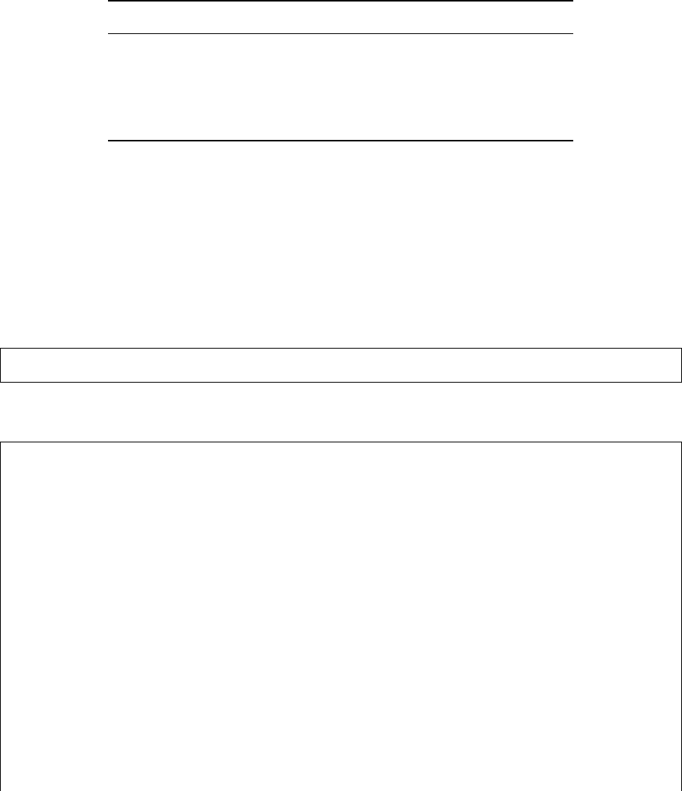

譯者序
Python 官方課程的開頭是這樣寫的：“Python 是一門既容易上手又強大的程式設計語言。”隨
著大資料、機器學習與人工智慧的興起，Python 語言正在受到越來越廣泛的關注和應用。對愛
好 Python 的人來說，人生苦短，Python 當歌！簡潔輕鬆的語法，開箱即用的模組，強大快樂
的社區，總可以快速建立出簡單高效的解決方案。對於希望快速入門 Python 語言的讀者們來
說，市面上眾多像字典一般厚厚的 Python 書籍常常讓人感到頭皮發麻。為了讓對 Python 語
言感興趣的讀者能快速入門這門語言，而非過分糾結於 Python 細枝末節之處，我們選擇並翻
譯了這本 Python 課程：A Whirlwind Tour of Python。
本書作者 Jake VanderPlas 目前是華盛頓大學 eScience 學院物理科學研究院院長。他既是
一位天文學家，也是一位會議演講達人，活躍於歷年的 PyData 會議，尤其擅長 Python 科學
計算與資料視覺化。Jake 在資料視覺化方面頗有建樹，建立了 altair、mpld3、JSAnimation 可
視化程式函式庫，同時為 NumPy、Scikit-Learn、Scipy、Matplotlib、IPython 等著名 Python 程式
函式庫做了大量貢獻。
這本僅 100 餘頁的小冊子是一本精簡的 Python 程式設計入門課程，介紹了 Python 語言的核
心特性以及資料科學領域內一些 Python 第三方擴充套件的實際應用，目的是讓熟悉其他程式語
言的資料科學家快速學習 Python。本書適合從未接觸過 Python 語言但對其他程式語言有一定
了解的讀者，建議讀者跟隨本書親自動手完成每一個例子。
本書翻譯力求在原版基礎上做到精煉、全面、準確地介紹 Python 語言。在書中難於理解
的部分我們添加了譯者注，希望能便於讀者理解。
本書由同濟大學蘋果開發俱樂部翻譯、審校，其中朱彥樵負責全書統稿工作；朱彥樵負
責翻譯第 5、11–13、15–17 章和附錄，蔣宇凱負責翻譯第 6–9 章，李晗負責翻譯第 1–4、10、
14 章；朱彥樵、李晗、李陽、樑琛、阿思亙負責審稿、校對與潤稿；朱彥樵、李源完成了全書
的編輯排版工作。
本書的出版工作得到了同濟大學軟體學院出版基金的大力支援，在此一併感謝。
Python 語言以及其他第三方套件發展迅速，限於譯者的水平與功底，本書錯謬之處在所難
免。希望讀者能夠不吝賜教，幫助本書更加完善。
本書譯者
上海嘉定
2018 年 4 月
i
目錄
1 Python 介紹 1
1.1 使用範例程式碼 . . . . . . . . . . . . . . . . . . . . . . . . . . . . . . . . . . . . . . 1
1.2 安裝和練習的注意事項 . . . . . . . . . . . . . . . . . . . . . . . . . . . . . . . . . 2
1.2.1 Python 2 還是 Python 3 . . . . . . . . . . . . . . . . . . . . . . . . . . . . 2
1.2.2 使用 Conda 安裝 . . . . . . . . . . . . . . . . . . . . . . . . . . . . . . . . 2
1.3 Python 之禪 . . . . . . . . . . . . . . . . . . . . . . . . . . . . . . . . . . . . . . 3
2 如何執行 Python 程式碼 5
2.1 Python 直譯器 . . . . . . . . . . . . . . . . . . . . . . . . . . . . . . . . . . . . . 5
2.2 IPython 直譯器 . . . . . . . . . . . . . . . . . . . . . . . . . . . . . . . . . . . . . 5
2.3 自我包含 Python 指令碼 . . . . . . . . . . . . . . . . . . . . . . . . . . . . . . . . . . 6
2.4 Jupyter Notebook . . . . . . . . . . . . . . . . . . . . . . . . . . . . . . . . . . . 7
3 Python 語法速成 9
3.1 用 # 標記註釋 . . . . . . . . . . . . . . . . . . . . . . . . . . . . . . . . . . . . . . 9
3.2 用換行符號結束語句 . . . . . . . . . . . . . . . . . . . . . . . . . . . . . . . . . . . 10
3.3 用分號結束語句 . . . . . . . . . . . . . . . . . . . . . . . . . . . . . . . . . . . . . 10
3.4 縮排：空白字元有意義 . . . . . . . . . . . . . . . . . . . . . . . . . . . . . . . . . 11
3.5 行內空白字元無意義 . . . . . . . . . . . . . . . . . . . . . . . . . . . . . . . . . . 12
3.6 小括號用於表示式分組或函式呼叫 . . . . . . . . . . . . . . . . . . . . . . . . . . 12
3.7 完成並更進一步 . . . . . . . . . . . . . . . . . . . . . . . . . . . . . . . . . . . . . 13
4 基礎 Python 語意：變數和物件 15
4.1 變數是指標 . . . . . . . . . . . . . . . . . . . . . . . . . . . . . . . . . . . . . . . 15
4.2 一切皆物件 . . . . . . . . . . . . . . . . . . . . . . . . . . . . . . . . . . . . . . . 17
5 基礎 Python 語法：運算子 19
5.1 算術運算子 . . . . . . . . . . . . . . . . . . . . . . . . . . . . . . . . . . . . . . . 19
5.2 位元運算子 . . . . . . . . . . . . . . . . . . . . . . . . . . . . . . . . . . . . . . . . 20
5.3 賦值運算子 . . . . . . . . . . . . . . . . . . . . . . . . . . . . . . . . . . . . . . . 21
5.4 比較運算子 . . . . . . . . . . . . . . . . . . . . . . . . . . . . . . . . . . . . . . . 22
5.5 布林運算子 . . . . . . . . . . . . . . . . . . . . . . . . . . . . . . . . . . . . . . . 23
5.6 身份和成員運算子 . . . . . . . . . . . . . . . . . . . . . . . . . . . . . . . . . . . 23
5.6.1 身份運算子 . . . . . . . . . . . . . . . . . . . . . . . . . . . . . . . . . . . 24
5.6.2 成員運算子 . . . . . . . . . . . . . . . . . . . . . . . . . . . . . . . . . . . 24
i
ii 目錄
6 內建型別：簡單變數型別 27
6.1 整數 . . . . . . . . . . . . . . . . . . . . . . . . . . . . . . . . . . . . . . . . . . . 27
6.2 浮點數 . . . . . . . . . . . . . . . . . . . . . . . . . . . . . . . . . . . . . . . . . . 28
6.2.1 浮點數精度 . . . . . . . . . . . . . . . . . . . . . . . . . . . . . . . . . . . 29
6.3 複數 . . . . . . . . . . . . . . . . . . . . . . . . . . . . . . . . . . . . . . . . . . . 30
6.4 字串型別 . . . . . . . . . . . . . . . . . . . . . . . . . . . . . . . . . . . . . . . 30
6.5 None 型別 . . . . . . . . . . . . . . . . . . . . . . . . . . . . . . . . . . . . . . . . 31
6.6 布林型別 . . . . . . . . . . . . . . . . . . . . . . . . . . . . . . . . . . . . . . . . 32
7 內建資料結構 35
7.1 列表 . . . . . . . . . . . . . . . . . . . . . . . . . . . . . . . . . . . . . . . . . . . 35
7.1.1 列表索引與切片 . . . . . . . . . . . . . . . . . . . . . . . . . . . . . . . . 36
7.2 Tuple . . . . . . . . . . . . . . . . . . . . . . . . . . . . . . . . . . . . . . . . . . . 38
7.3 字典 . . . . . . . . . . . . . . . . . . . . . . . . . . . . . . . . . . . . . . . . . . . 40
7.4 集合 . . . . . . . . . . . . . . . . . . . . . . . . . . . . . . . . . . . . . . . . . . . 41
7.5 其他專用資料結構 . . . . . . . . . . . . . . . . . . . . . . . . . . . . . . . . . . . 41
8 控制流程 43
8.1 條件語句：if-elif-else . . . . . . . . . . . . . . . . . . . . . . . . . . . . . . . . 43
8.2 for 迴圈 . . . . . . . . . . . . . . . . . . . . . . . . . . . . . . . . . . . . . . . . . 43
8.3 while 迴圈 . . . . . . . . . . . . . . . . . . . . . . . . . . . . . . . . . . . . . . . 44
8.4 調整迴圈執行：break 和 continue . . . . . . . . . . . . . . . . . . . . . . . . . . 45
8.5 帶有 else 塊的迴圈 . . . . . . . . . . . . . . . . . . . . . . . . . . . . . . . . . . 45
9 定義和使用函式 47
9.1 使用函式 . . . . . . . . . . . . . . . . . . . . . . . . . . . . . . . . . . . . . . . . 47
9.2 定義函式 . . . . . . . . . . . . . . . . . . . . . . . . . . . . . . . . . . . . . . . . 47
9.3 預設參數 . . . . . . . . . . . . . . . . . . . . . . . . . . . . . . . . . . . . . . . . 48
9.4 可變參數：*args 和 **kwargs . . . . . . . . . . . . . . . . . . . . . . . . . . . . 49
9.5 匿名（Lambda）函式 . . . . . . . . . . . . . . . . . . . . . . . . . . . . . . . . . 50
10 錯誤和異常 53
10.1 執行時錯誤 . . . . . . . . . . . . . . . . . . . . . . . . . . . . . . . . . . . . . . . 53
10.2 捕獲異常：try 和 except . . . . . . . . . . . . . . . . . . . . . . . . . . . . . . . 55
10.3 丟擲異常：raise . . . . . . . . . . . . . . . . . . . . . . . . . . . . . . . . . . . . 57
10.4 深入探究異常 . . . . . . . . . . . . . . . . . . . . . . . . . . . . . . . . . . . . . . 58
10.4.1 訪問錯誤資訊 . . . . . . . . . . . . . . . . . . . . . . . . . . . . . . . . . . 58
10.4.2 定義自定義異常 . . . . . . . . . . . . . . . . . . . . . . . . . . . . . . . . 59
10.5 try...except...else...finally . . . . . . . . . . . . . . . . . . . . . . . . . . . . . 60
11 迭代器 61
11.1 遍歷列表 . . . . . . . . . . . . . . . . . . . . . . . . . . . . . . . . . . . . . . . . 61
11.2 不總是列表的列表：range() . . . . . . . . . . . . . . . . . . . . . . . . . . . . . 62
11.3 實用迭代器介紹 . . . . . . . . . . . . . . . . . . . . . . . . . . . . . . . . . . . . . 63
目錄 iii
11.3.1 enumerate . . . . . . . . . . . . . . . . . . . . . . . . . . . . . . . . . . . 63
11.3.2 zip . . . . . . . . . . . . . . . . . . . . . . . . . . . . . . . . . . . . . . . 64
11.3.3 map 和 filter . . . . . . . . . . . . . . . . . . . . . . . . . . . . . . . . . 64
11.3.4 迭代器作為函式參數 . . . . . . . . . . . . . . . . . . . . . . . . . . . . . . 65
11.4 專用迭代器：itertools . . . . . . . . . . . . . . . . . . . . . . . . . . . . . . . . 66
12 列表推導 67
12.1 基礎列表推導 . . . . . . . . . . . . . . . . . . . . . . . . . . . . . . . . . . . . . . 67
12.2 多重迭代 . . . . . . . . . . . . . . . . . . . . . . . . . . . . . . . . . . . . . . . . 68
12.3 條件控制迭代 . . . . . . . . . . . . . . . . . . . . . . . . . . . . . . . . . . . . . . 68
12.4 條件控制值 . . . . . . . . . . . . . . . . . . . . . . . . . . . . . . . . . . . . . . . 68
13 產生器 71
13.1 產生器表示式 . . . . . . . . . . . . . . . . . . . . . . . . . . . . . . . . . . . . . . 71
13.1.1 列表推導使用方括號，而產生器表示式使用圓括號 . . . . . . . . . . . . . 71
13.1.2 列表是值的集合，而產生器是產生值的方法 . . . . . . . . . . . . . . . . . 71
13.1.3 列表可以被迭代多次，而產生器表示式是一次性的 . . . . . . . . . . . . . 73
13.2 產生器函式：使用關鍵字 yield . . . . . . . . . . . . . . . . . . . . . . . . . . . . 74
13.3 案例學習：質數產生器 . . . . . . . . . . . . . . . . . . . . . . . . . . . . . . . . . 74
14 模組和套件 77
14.1 匯入模組：import 語句 . . . . . . . . . . . . . . . . . . . . . . . . . . . . . . . . 77
14.1.1 明確模組匯入 . . . . . . . . . . . . . . . . . . . . . . . . . . . . . . . . . . 77
14.1.2 明確模組匯入並取別名 . . . . . . . . . . . . . . . . . . . . . . . . . . . . . 77
14.1.3 明確匯入模組內容 . . . . . . . . . . . . . . . . . . . . . . . . . . . . . . . 78
14.1.4 隱式匯入模組內容 . . . . . . . . . . . . . . . . . . . . . . . . . . . . . . . 78
14.2 匯入 Python 標準函式庫 . . . . . . . . . . . . . . . . . . . . . . . . . . . . . . . . . . 79
14.3 匯入第三方模組 . . . . . . . . . . . . . . . . . . . . . . . . . . . . . . . . . . . 79
15 字串處理和正則表示式 81
15.1 Python 簡易字串操作 . . . . . . . . . . . . . . . . . . . . . . . . . . . . . . . . 81
15.1.1 字串格式化：大小寫轉換 . . . . . . . . . . . . . . . . . . . . . . . . . . 81
15.1.2 格式化字串：新增和刪除空格 . . . . . . . . . . . . . . . . . . . . . . . 82
15.1.3 查詢和替換子字串 . . . . . . . . . . . . . . . . . . . . . . . . . . . . . . 84
15.1.4 拆分和分割字串 . . . . . . . . . . . . . . . . . . . . . . . . . . . . . . . 85
15.2 格式化字串 . . . . . . . . . . . . . . . . . . . . . . . . . . . . . . . . . . . . . . 86
15.3 使用正則表示式靈活地匹配字串模式 . . . . . . . . . . . . . . . . . . . . . . . . 88
15.3.1 一個更複雜的例子 . . . . . . . . . . . . . . . . . . . . . . . . . . . . . . . 89
15.3.2 正則表示式語法基礎 . . . . . . . . . . . . . . . . . . . . . . . . . . . . . . 90
15.3.3 關於正則表示式的更多資源 . . . . . . . . . . . . . . . . . . . . . . . . . . 94
16 資料科學工具概覽 95
16.1 NumPy：Python 數值計算 . . . . . . . . . . . . . . . . . . . . . . . . . . . . . . 95
16.2 Pandas：標籤化的面向行資料儲存(Labeled Column-oriented Data) . . . . . . . 97
iv 目錄
16.3 Matplotlib：MatLab 風格的科學視覺化 . . . . . . . . . . . . . . . . . . . . . . . 98
16.4 SciPy：Python 科學計算 . . . . . . . . . . . . . . . . . . . . . . . . . . . . . . . 99
16.5 其他資料科學函式庫 . . . . . . . . . . . . . . . . . . . . . . . . . . . . . . . . . . . . . 100
17 更多學習資源 101
A 附錄：插圖程式碼 103
A.1 第 7 章：列表索引 . . . . . . . . . . . . . . . . . . . . . . . . . . . . . . . . . . . 103
中英文術語對照表 105
第 1 章 Python 介紹
在 20 世紀 80 年代後期，Python 作為一種適合教學使用的腳本語言，已經成為學術界和
工業界中許多程式員、工程師、研究人員和資料科學家們必不可少的工具。作為一名專注於構
建和推廣適合資料密集型科學研究開放工具的天文學家，我發現無論是從海量天文資料中抽取
出有意義的資訊、在網路上爬取資料並進行清洗，還是自動化地處理日常的工作，Python 幾乎
都可以完美地解決我每天遇到的各種各樣的問題。
Python 的魅力在於它的語法簡潔但不失優雅，以及 Python 龐大的生態環境可在不同領域
都發揮作用所帶來的便利。比如，大部分在科學計算和資料科學中用到的 Python 程式碼都使用
到了幾種功能強大且成熟的第三方套件（package）：
• NumPy：提供對多維資料矩陣進行高效計算和儲存的方法。
• SciPy：包含一系列數學工具，比如數值積分和數值插值計算。
• Pandas：提供資料幀物件以及一組強大的方法來處理、過濾、分組和轉換資料。
• Matplotlib：提供建立高品質資料圖表的介面。
• Scikit-Learn：提供一個用於常用機器學習演算法的通用工具套件。
• IPython / Jupyter：提供一種互動式筆記本環境，對於科研分析以及建立互動式可執行
文件非常有用。例如，這本書的手稿完全由 Jupyter Notebook 寫成。
有了這些強大的套件作為支援，其他工具套件好像沒有什麼必要了。如果你需要完成一項科學
分析或者資料分析的任務，一般來說都有人已經寫了這樣一個工具。
為了能更好的感受到 Python 在資料科學領域的力量，首先要熟悉 Python 的語法。我常常
遇到一些有著（有時是廣泛的）其他程式語言背景（比如 MATLAB、IDL、R、Java 和 C++ 等）
的學生和同事一直在尋找一份簡潔、全面，並且符合他們的水平而不是從零開始的 Python 教
程，這份課程就試圖填補這個空白。
因此，本書不是為了全面地介紹程式設計，也不是一份完整的 Python 語言說明。（如果你對此
有需求，可以看看第 17 章更多學習資源。）相對地，這本書為你提供了一場 Python 的旋風之
旅，它涉及到 Python 核心的語法、語意、內建的資料型別和資料結構、函數定義、控制流程語
句和這門語言的其他方面。我希望讀者能順著這本書走下去，為探索資料科學打下堅實的基礎。
1.1 使用範例程式碼
本書中使用到的一些補充資料（範例程式碼或者練習等）可以從這裡下載：https://github.
com/jakevdp/WhirlwindTourOfPython/。本書是要幫你完成工作的。一般來說，如果本書提
供了範例程式碼，你可以把它用在你的程序或文件中。除非你使用了很大一部分程式碼，否則無
須聯系我們獲得許可。比如，用本書的幾個程式碼片段寫一個程式就無須獲得許可，銷售或分
1

2 1. PYTHON 介紹
發 O’Reilly 圖書的範例光碟則需要獲得許可；引用本書中的範例程式碼回答問題無須獲得許可，
將書中大量的程式碼放到你的產品文件中則需要獲得許可。
我們很希望但並不強制要求你在引用本書內容時加上引用說明。引用說明一般包括書名、
作者、出版社和 ISBN，比如：A Whirlwind Tour of Python by Jake VanderPlas (O’Reilly).
Copyright 2016 O’Reilly Media, Inc., 978-1-491-96465-1。
如 果 你 覺 得 你 使 用 代 碼 示 例 的 場 景 不 符 合 上 述 規 定， 請 隨 時 通 過 permis-
sions@oreilly.com 與我們聯絡。
1.2 安裝和練習的注意事項
無論是使用 Windows、Linux 還是 macOS，安裝 Python 和使用科學計算的函式庫套件都非常
簡單。本節將簡要介紹配置你的環境時的一些注意事項。
1.2.1 Python 2 還是 Python 3
這本書使用了 Python 3 的語法，其中包含與 Python 2.x 系列不相容的語言增強功能。雖
然 Python 3.0 在 2008 年首次發布，但採用的速度相對較慢，特別是在科學研究和 Web 開
發領域。這主要是因為許多基本套件和工具套件需要一些時間才能與新的語言兼容。然而，
自 2014 年初以來，資料科學生態中一些最重要的工具的穩定版本已經與 Python 2 和 3 完全兼
容，因此本書將使用較新的 Python 3 語法。即使是在這種情況下，本書中絕大多數的程式碼片
段也可以在 Python 2 中不加修改地執行。在使用 Python 2 不相容的語法的情況下
1
，我將盡
力明確地註明。
1.2.2 使用 Conda 安裝
雖然有很多種方法安裝 Python，但是我較為推薦跨平台的 Anaconda，特別是如果你希望
最終使用前面提到的資料科學工具的話。Anaconda 的發行版有下面兩種版本：
• Miniconda 提供了一個 Python 直譯器和一個叫做 conda 的命令行工具，它提供了面
向 Python 套件的跨平台套件管理功能，就像 Linux 使用者熟悉的 apt 或者 yum。
• Anaconda 包括 Python 和 conda，以及可新增的科學計算套件。
Anaconda 所包含的套件都可以手動地安裝在 Miniconda 中。出於這個原因，我推薦從 Mini-
conda 開始。要下載並安裝 Miniconda，確保你已經選擇了 Python 3 版本，然後安裝 IPython
Notebook 套件：
[~]$ conda install ipython-notebook
想獲得關於 conda 的資訊，例如如何建立或者使用 conda 環境，請檢視上面給出的 Mini-
conda 連結。
1
譯者注：Python 核心團隊計劃在 2020 年停止支援 Python 2。已經有許多開源專案，如 Numpy、sklearn 等
也已經發表宣告將在 2020 年以前放棄對於 Python 2 的支援。
1.3. PYTHON 之禪 3
1.3 Python 之禪
Python 愛好者經常很快指出 Python 是多麼“直觀”“美麗”或“有趣”。雖然我傾向於同意
這個觀點，但我也認識到，美麗、直觀和樂趣往往與對語言的熟悉並存，因此對於那些熟悉其他
語言的人來說，這種絢麗的情感可能會顯得有些沾沾自喜。不過，我希望如果你給 Python 一個
機會，你將會看到這樣的印象可能來自哪裡。並且，如果你真的想深入探究那些推動 Python 進
階用戶的程式設計理念的話，Python 直譯器中就有一個很好的復活節小彩蛋——你只需
閉上眼睛，冥想幾分鐘，然後執行 import this：
In [1]: import this
The Zen of Python, by Tim Peters
Beautiful is better than ugly.
Explicit is better than implicit.
Simple is better than complex.
Complex is better than complicated.
Flat is better than nested.
Sparse is better than dense.
Readability counts.
Special cases aren't special enough to break the rules.
Although practicality beats purity.
Errors should never pass silently.
Unless explicitly silenced.
In the face of ambiguity, refuse the temptation to guess.
There should be one-- and preferably only one --obvious way to do it.
Although that way may not be obvious at first unless you're Dutch.
Now is better than never.
Although never is often better than *right* now.
If the implementation is hard to explain, it's a bad idea.
If the implementation is easy to explain, it may be a good idea.
Namespaces are one honking great idea -- let's do more of those!
伴隨著《Python 之禪》
2
，讓我們開始我們的 Python 之旅！
2
譯者注：《Python 之禪》是 Python 2.2 及以後版本中的一個小彩蛋，是 Tim Peters 在 1999 年 6 月左右
所寫的 20 個影響 Python 程式語言設計的原理組成的集合，其中 19 個被包括在這裡。《Python 之禪》實際上
是 Python 增強提案（Python Enhancement Proposals, PEP）中的第 20 號提案 PEP 20。有意思的是，如果你查
看 this 模組的原始碼，你會發現它完全違背了這些原則 。

第 2 章 如何執行 Python 程式碼
Python 是一種靈活的語言，你可以根據你手中的任務選擇不同的方法來使用它。Python 和
其他程式語言的一個區別在於 Python 是直譯型（interpreted）而不是編譯型（compiled）語言。
這意味著 Python 是一行一行執行的，因此它具有 Fortran、C 或者 Java
1
這些編譯型語言無法做
到的“互動”特性。這一節會介紹
4
種執行
Python
程式碼的主要方法：使用
Python
或
IPython
解
釋器（interpreter）、執行自我包含指令碼（self-contained script）或者使用 Jupyter Notebook。
2.1 Python 直譯器
逐行運行 Python 程式碼最基礎的方法是在 Python 直譯器中運行。安裝 Python 語言運行
時（在前面的一節提到過）然後在命令行中輸入 python（在 macOS 和 Unix/Linux 中使用終
端（terminal），或者在 Windows 下使用 CMD）：
$ python
Python 3.5.1 |Continuum Analytics, Inc.| (default, Dec 7 2015, 11:24:55)
Type "help", "copyright", "credits" or "license" for more information.
>>>
當直譯器啟動之後，你就可以開始輸入並執行程式碼片段了。這裡我們可以把它當作一個簡
單的計算器來用，執行一個計算過程並把結果賦給某個變數（variable）：
>>> 1 + 1
2
>>> x = 5
>>> x * 3
15
這個直譯器讓我們能方便地嘗試一些 Python 程式碼片段並嘗試一些短的操作序列。
2.2 IPython 直譯器
如果你在原始的 Python 直譯器上花費了很多時間，你會發現它缺少作為一個成熟的互動
開發環境的許多功能。另一種可選的直譯器叫做 IPython（Interactive Python 的縮寫），它包
含在 Anaconda 發行版中，而且它包含許多相對於基礎 Python 直譯器更方便的增強功能。在
命令列中輸入 ipython 可以開啟它：
1
譯者注：在最近推出的 Java 9 及以後的版本中，Java 提供了 JShell 使得 Java 具有了互動的功能。
5

6 2. 如何執行 PYTHON 程式碼
$ ipython
Python 3.5.1 |Continuum Analytics, Inc.| (default, Dec 7 2015, 11:24:55)
Type "copyright", "credits" or "license" for more information.
IPython 4.0.0 -- An enhanced Interactive Python.
? -> Introduction and overview of IPython's features.
%quickref -> Quick reference.
help -> Python's own help system.
object? -> Details about 'object', use 'object??' for extra details.
In [1]:
原始 Python 解釋器和 IPython 解釋器美學上的區別主要取決於命令行中的提示符：
Python 預設使用 >>> 作為提示符號，而 IPython 為每行命令進行了數字編號（比如 In [1]:）。
不管怎樣，我們還是可以像前面那樣逐行地執行程式碼。
In [1]: 1 + 1
Out[1]: 2
In [2]: x = 5
In [3]: x * 3
Out[3]: 15
請注意，就像輸入的命令被編號一樣，每個命令的輸出也被編號。IPython 實現了很廣泛
的有用的功能，更多的資料可以參見第 17 章更多學習資源。
2.3 自我包含 Python 指令碼
在某些情況下，能夠一行一行地執行 Python 程式碼塊確實很有用，但是對於更多複雜的程
序，把程式碼儲存到檔案中並一次性執行是更明智的選擇。按照慣例，Python 指令碼會被儲存在副
檔名為 .py 的檔案中。比如，讓我們建立一個名叫 test.py 的檔案，並把下面的內容寫入進去。
# 檔案：test.py
print("Running test.py")
x = 5
print("Result is", 3 * x)
為了執行這個檔案，我們必須確保它在一個正確的目錄下，然後在命令列中輸入： python
filename 。
$ python test.py
Running test.py
Result is 15

2.4. JUPYTER NOTEBOOK 7
對於更複雜的程式，建立像這樣的自我包含指令碼
2
是必須的。
2.4 Jupyter Notebook
Jupyter Notebook 是一種很好用的工具，它融合了互動式命令列和自我包含指令碼的特點。它
是一種文件格式，其中可以包含可執行程式碼、格式化的文字、圖片等，甚至可以用互動功能組
成整個文件。雖然這種特殊的記事本開始時只有 Python 版本，但是它正在不斷地被其他許多
語言相容。到了現在，它已經是 Jupyter Pro ject 的一部分。這種記事本不止是一種好用的開發
環境，也是將程式碼、數字、資料和文字相結合，通過豐富的計算和資料驅動的敘述來共享工作
的一種手段。
2
譯者注：嚴格來說，自我包含指令碼意味著一個指令碼不需要額外環境就可以執行。對於 Python 這類別直譯型語言，雖
然無法編譯 Python 指令碼，但是可以使用第三方函式庫如 cxfreeze 和 PyInstaller 等進行打包。這裡“自包含”的意義
主要在於一個指令碼檔案包含了全部需要執行的程式碼。

第 3 章 Python 語法速成
最開始 Python 是被當作一門用來教學語言來開發的，但是它的易用性和簡潔的語法讓
它受到初學者和專家們的歡迎。
Python 語法的簡潔性使得一些人將其稱為“可執行偽程式碼”。並且，實際上我自己的經驗
是，閱讀和理解
Python
指令碼比閱讀類似的程式碼（例如
C
語言）要容易得多。這裡我們將開始
討論 Python 語法（syntax）的主要特性。
語法指的是語言的結構（即構成正確結構的程式內容）。在開始的時候，我們不會過分地
糾結語意（semantics）——這個詞指的是語法中詞和符號的含義——但是我們在後面的學習中
終究繞不開它。
來看一下後面這個例子：
In [1]: # 設定中點
midpoint = 5
# 建立兩個空的列表
lower = []; upper = []
# 把數字分為大的一半和小的一半
for i in range(10):
if (i < midpoint):
lower.append(i)
else:
upper.append(i)
print("lower:", lower)
print("upper:", upper)
lower: [0, 1, 2, 3, 4]
upper: [5, 6, 7, 8, 9]
這段程式碼看起來有點傻，但是在短短幾句中就展示了 Python 語法中的幾個重要部分。現
在讓我們一點點來看，探討一下 Python 的語法特性。
3.1 用 # 標記註釋
這段指令碼是由一句註釋開始的：
9

10 3. PYTHON 語法速成
# 設定中點
在 Python 中，註釋是用一個 # 字元來表示的，一行中跟在 # 字元後面的東西都會被直譯
器忽略掉。這意味著，比如你可以像剛才那樣將注釋獨立成行，也可以將註釋寫在語句後的同
一行內。例如，你可以像下面這樣寫一個註釋：
x += 2 # x = x + 2 的簡寫形式
雖然多行字串經常被用來替代多行註釋，但是 Python 中並沒有類似 C 和 C++ 中使用
的
/* ... */
的多行註釋的語法。關於這個問題可以參閱第 15 章字串處理和正則表示式。
3.2 用換行符號結束語句
指令碼的下一行是：
midpoint = 5
這是一個賦值運算子（assignment operator）。我們建立了一個叫做 midpoint 的變數，並
且把它的值賦為 5。注意到，在句子末尾我們簡單地使用了換行來標識一行的結束。這和必須
使用分號（;）結束一個句子的 C 和 C++ 等語言正好相反。
在 Python 中，如果你想要在下一行繼續一個語句，你可以使用 \ 字元來來指示這一點：
In [2]: x = 1 + 2 + 3 + 4 +\
5 + 6 + 7 + 8
用一對小括號把一個語句括起來也可以讓一個表示式換行：
In [3]: x = (1 + 2 + 3 + 4 +
5 + 6 + 7 + 8)
大部分 Python 程式碼風格指南都建議第二種方法（使用括號），而不是第一種（使用 \ 字
元）。
3.3 用分號結束語句
有時候把多個語句放在一行上可能會很有用。指令碼中下一行程式碼是：
lower = []; upper = []
這裡展示了如何像 C 語言中那樣在 Python 中使用分號（;）把兩個語句放到同一行裡。從
功能上來說，下面這種寫法和上面是等價的：
lower = []
upper = []
儘管偶爾使用這種方法能帶來一定的便利，使用分號來把兩個語句放到同一行中並不被大
部分的 Python 程式碼風格指南所推薦。

3.4. 縮排：空白字元有意義 11
3.4 縮排：空白字元有意義
接下來讓我們來看看程式碼裡主要的部分：
for i in range(10):
if i < midpoint:
lower.append(i)
else:
upper.append(i)
這是一個複合控制流程語句（control flow statement），它包含了一個迴圈語句（loop state-
ment）和一個條件語句（conditional statement）——我們等一下再來討論這兩種語句。現在，
先來看看下面展示出的可能是 Python 語法中最有爭議的一個特性：空白字元是有意義的！
在程式語言中，一個程式碼區塊（block）指的是可以看作一個單元的幾個語句的集合。比如，
在 C 語言中程式碼塊被大括號包裹起來：
// C 程式碼
for (int i = 0; i < 100; i++)
{
// 大括號標識程式碼塊
total += i;
}
在 Python 中，程式碼塊使用縮排（indentation）來標識：
for i in range(100):
# 縮排標識程式碼塊
total += i
在 Python 中，縮排的程式碼塊的前一行末尾經常有一個冒號（:）。
使用縮進可以強制規範出一種在大多數 Python 程式碼中統一的、可讀性高的程式碼風格。但
是也可能讓初學者覺得很困惑，後面兩個程式碼片段會產生不同的結果：
>>> if x < 4: >>> if x < 4:
... y = x * 2 ... y = x * 2
... print(x) ... print(x)
左邊的程式碼片段中，print(x) 在縮進塊裡面，所以只有 x 小於 4 的時候才會被執行。右
邊的程式碼片段中，print(x) 在縮排塊外面，所以不管 x 的值為多少都會被執行！
一些習慣其他程式語言的程式設計師對 Python 中有意義的空白字元很驚訝，但是從實踐中
來看，這樣可以比那些不強制縮進的語言有更好的可讀性和風格的一致性。如果你覺得使
用 Python 的空白字元很不舒服，我建議你去嘗試一下，你會發現你將逐漸適應它。
最後，你應該注意到，用於縮排程式碼區塊的空格的數量取決於使用者，只要它在整個指令碼中是
一致的就好。按照慣例，大多數風格指南都建議將程式碼塊縮排四個空格，這也是本書中遵循的
約定。請注意，許多文字編輯器（如 Emacs 和 Vim）都包含 Python 模式，能自動縮排四個空
格。

12 3. PYTHON 語法速成
3.5 行內空白字元無意義
雖然在行（程式碼區塊）之前的空格是有意義的，但 Python 行內的空格並不重要。例如，這
三個表示式是等價的：
In [4]: x=1+2
x = 1 + 2
x = 1 + 2
濫用這種靈活性可能會導致程式碼可讀性的問題——實際上濫用空白字元通常是故意混淆的
程式碼的主要手段之一（有些人常常以此為消遣）。有效地使用空白可以讓程式碼可讀性更好，特別
是在操作符相連的情況下。比較以下兩個求冪的表示式：
x=10**-2
x = 10 ** -2
我覺得一眼看過去第二個版本更容易讀懂。大多是的風格指南都推薦在二元運算子前後各
加一個空格，在一元運算子前後不加空格。我們會在第 5 章基礎 Python 語法：運算子中進一
步討論 Python 的運算子。
3.6 小括號用於表示式分組或函式呼叫
在前面的程式碼片段中，我們看到兩種使用小括號的方式。首先，小括號可以用在為表達式
或者數學運算的分組中：
In [5]: 2 * (3 + 4)
Out[5]: 14
小括號還可以用於函式（function）被呼叫的時候。在下面的程式碼片段中，print() 函式用
於顯示一個變數的內容。下面這個例子中一對小括號將函數的參數（argument）括起來，這表
示將這些參數傳入這個函式來呼叫它。
In [6]: print('first value:', 1)
first value: 1
In [7]: print('second value:', 2)
second value: 2
有的函數可以沒有參數，這時候也必須使用小括號來表示調用這個函數。下面是一個使
用列表的 sort 方法的例子：

3.7. 完成並更進一步 13
In [8]: L = [4,2,3,1]
L.sort()
print(L)
[1, 2, 3, 4]
sort 之後的括號（()）表示函式被執行。即使不需要傳入參數，括號也是必不可少的。
旁註：關於 print() 的一點說明
在上面我們是用了 print() 函式做例子，print() 函式是 Python 2.x 和 Python 3.x 中
變化的一部分。在 Python 2 裡，print 表現得像一個表示式——你可以這樣寫：
# Python 2 才能這麼做！
>> print "first value:", 1
first value: 1
由於各種原因，這門語言的開發者決定在 Python 3 中 print() 應該成為一個函式，所
以我們現在這麼寫：
# 僅 Python 3 支援！
>>> print("first value:", 1)
first value: 1
這是 Python 2 和 3 中不向後相容的語法中的一條。在撰寫本書時，你通常會發現以兩
個版本的 Python 編寫的範例。並且，存在 print 語句，而不是 print() 函式通常是你正
在檢視的程式碼是 Python 2 程式碼的第一跡象之一。
3.7 完成並更進一步
這一章是 對 Python 語 法基 本特 徵的 一個 很簡 單的 探索。 它的 目的 是當 你在閱讀後
面的代碼時，給你一個很好的參考框架。我們幾次提到了“Python 風格指南”，它可以
幫助 團 隊以一 致 的風格 編 寫代碼。Python 中 最廣泛 使 用的風 格 指南 稱 為 PEP 8，可 以
在 https://www.python.org/dev/peps/pep-0008/ 找到。當你開始編寫更多的 Python 程式碼
時，閱讀一下這份程式碼指南是很有用的！風格指南中包含許多 Python 大師的智慧，大多數建
議不僅僅是簡單的教條：它們是基於無數經驗的建議所寫成，可以幫助你們避免程式碼中一些微
妙的錯誤和 bug。
第 4 章 基礎 Python 語意：變數和物件
本節將開始介紹 Python 語言的基本語義（semantics）。與上一節所述的語法不同，語言
的語意涉及語句的含義。正如我們對語法的討論一樣，在這裡我們大致瀏覽 Python 中一些基
本的語意結構，為你提供一個更好的參考框架，以了解以後章節的程式碼。
本節將介紹變數（variable）和物件（object）的語義，這是你在 Python 腳本中儲存、引
用和操作資料的主要方式。
4.1 變數是指標
在 Python 中想要為變數賦值易如反掌，只需要把一個變數名放到等號（=）的左邊就好。
# 把 4 賦給變數 x
x = 4
這可能看起來很直接，但如果你心中對這個操作建立了錯誤的印象，那麼 Python 的工作
方式可能會令你感到困惑。我們將在這裡簡要介紹一下。
在許多程式語言中，變數一般被認為是存放資料的容器或一個桶一樣的東西。所以比如
在 C 中，當你寫：
// C 程式碼
int x = 4;
本質上，你定義了一個名為 x 的“記憶體桶”，並將值 4 放入其中。相比之下，在 Python 中變
量並不是作為容器，而是作為一個指標（pointer）
1
。所以在 Python 中，當你寫：
x = 4
你本質上定義一個名為 x 的指標，指向一些包含值 4 的記憶體中的位置。注意這麼做的一個
後果：因為
Python
的變數只是指向各種物件，所以不需要“宣告”變數，甚至不需要要求變
量總是指向相同型別的物件！這是人們所說的 Python 的動態型別（dynamically typed）：變數
名稱可以指向任何型別的物件。所以在 Python 中，你可以這樣做：
In [1]: x = 1 # x 是一個整數型別
x = 'hello' # 現在 x 是一個字串
x = [1, 2, 3] # 現在 x 是一個列表
1
譯者注：Python 中並沒有 C 語言那樣的指針型別，它表現得更像 C++ 或者 Java 中引用（reference）的概
念，後文中的指標一般是使用這裡的含義。
15
16 4. 基礎 PYTHON 語意：變數和物件
然而靜態類型（statically typed）語言的用戶可能會想念類別似於 C 語言中的通過宣告保證
的型別安全性。
int x = 4;
這種動態類型是使 Python 能夠快速編寫並易於閱讀的原因之一。你需要注意使用這種
“指標型別變數”的後果：如果我們有兩個變數名指向相同的可變（mutable）物件，那麼更改
其中一個也會改變另一個！例如，我們來建立和修改列表：
In [2]: x = [1, 2, 3]
y = x
我們建立的兩個變數 x 和 y 指向了同一個物件。因此，如果我們通過其中一個變數名來修
改這個列表，我們會看到“另一個”列表也被同時改變了。
In [3]: print(y)
[1, 2, 3]
In [4]: x.append(4) # 把 4 加到 x 指向的列表
print(y) # y 指向的列表也被改變了
[1, 2, 3, 4]
如果你錯誤地將變數視為包含資料的“桶”，那麼這種行為可能會令人困惑。但是，如果你
將變數正確地視為指向物件的指標，那麼這種行為是有道理的。
如果我們用 = 把另外一個值賦給 x，就不會影響到 y 的值——賦值是改變變數指向的物件：
In [5]: x = 'something else'
print(y) # y 沒有被改變
[1, 2, 3, 4]
再次強調，把 x 和 y 看作指標，把 = 看做改變變數名指向的東西的操作。
你可能會想知道這個指標的想法是否使得 Python 中的算術運算難以追蹤，但是 Python 的
設計不存在這個問題。數字、字串和其他簡單型別（simple type）是不可變（immutable）的：
你不能更改它的值，你只能更改變數指向的值。所以執行如下操作是完全安全的：
In [6]: x = 10
y = x
x += 5 # 把 x 的值加上 5 再賦給 x
print("x =", x)
print("y =", y)
4.2. 一切皆物件 17
x = 15
y = 10
當我們執行 x += 5 時, 我們不會改變值為 10 的那個被 x 指向的物件；我們會讓 x 重新指
向一個值為 15 的新的物件。因此， y 的值不會受到這個操作的影響。
4.2 一切皆物件
Python 是一門物件導向（object-oriented）的程式語言，所以 Python 中的一切都是物件。
我們來看看這是什麼意思。之前我們看到變數是簡單的指針，變數名本身沒有附加的型別
資訊。這導致一些人錯誤地聲稱 Python 是一種無型別的語言。但事實並非如此！考慮以下這
個例子：
In [7]: x = 4
type(x)
Out[7]: int
In [8]: x = 'hello'
type(x)
Out[8]: str
In [9]: x = 3.14159
type(x)
Out[9]: float
Python 有型別，然而這些型別不是連結到變數名，而是與物件本身相連。
在物件導向的程式設計語言（如 Python）中，物件（object）是一個包含資料以及關聯的元數
據（metadata）和功能的實體。在 Python 中一切都是物件，這意味著每個實體都有一些元數
據（稱為屬性（attribute））和關聯的功能（稱為方法（method））。這些屬性和方法通過點號
（.）訪問。
例如，在我們看到列表有一個 append 方法之前，它將一個元素新增到列表中，並通過點
號訪問：
In [10]: L = [1, 2, 3]
L.append(100)
print(L)
[1, 2, 3, 100]
可能你一般會認為複合物件（如列表）具有屬性和方法，但令人意外的是在 Python 中，即
使是簡單型別也附加了屬性和方法。

18 4. 基礎 PYTHON 語意：變數和物件
比如，數值類型擁有 real 和 imag 屬性，儲存了這個值的實部和虛部（如果把它看成一
個複數）。
In [11]: x = 4.5
print(x.real, "+", x.imag, 'i')
4.5 + 0.0 i
方法和屬性類別似，不過方法是使用一對小括號來調用的函數。例如，浮點數有一個叫
做 is_integer 的方法來檢查這個值是否是一個整數：
In [12]: x = 4.5
x.is_integer()
Out[12]: False
In [13]: x = 4.0
x.is_integer()
Out[13]: True
當我們說 Python 中的所有東西都是一個物件時，我們的意思是一切都是一個物件——即
使是物件的屬性和方法本身就是自己的一個有 type 資訊的物件。
In [14]: type(x.is_integer)
Out[14]: builtin_function_or_method
我們會發現 Python 的一切皆物件的設計帶來了一些非常方便的語言結構。
第 5 章 基礎 Python 語法：運算子
在之前的章節中我們大致了解了 Python 語法中關於變數和物件的知識。本章起我們將繼
續深入了解 Python 語法中不同的運算子（operator）。本章結束之時，你將掌握一些基本的工
具來比較和操作 Python 中的資料。
5.1 算術運算子
Python 實現了 7 種基礎二元算術運算子（binary arithmetic operator），其中的 2 種可以
同時被用作一元運算子（unary operator）。下表總結了這 7 種運算子：
運算子 名稱 描述
a + b 加 a 與 b 求和
a - b 減 a 與 b 求差
a * b 乘 a 與 b 求積
a / b 真除 a 與 b 求商
a // b 向下整除 a 與 b 求商，去掉小數部分
a % b 模 a 與 b 取模
a ** b 乘方 a 的 b 次方
-a 取反 a 符號取反
+a 單目加 a 不變（極少使用）
這些運算子可以直接按照直覺使用並組合，並且按照標準規範添加括號來規定計算的優先
等級。如：
In [1]: # 加、減、乘
(4 + 8) * (6.5 - 3)
Out[1]: 42.0
向下整除（floor division）的結果是真除（true division）後去掉小數部分：
In [2]: # 真除
print(11 / 2)
5.5
19
20 5. 基礎 PYTHON 語法：運算子
In [3]: # 向下整除
print(11 // 2)
5
向下整除是在 Python 3 中新增的新運算子。你應當意識到在 Python 2 中標準除法運算子
（/）對於整數來說執行的是向下整除，而對浮點數來說執行的是真除。
最後，我將提到 Python 3.5 中新增的第 8 個算術運算子：a @ b。這個運算子對 a 和 b 執
行矩陣乘法（matrix product），用於許多線性代數（linear algebra）的擴充套件函式庫。
5.2 位元運算子
除了 基 本的算 術 運算 符 外，Python 還提 供了對整 數進行位 運算的位 運 算符 （bitwise
operator）。相比基本運算子，這些運算子更少被使用，但是知道它們的存在是有用的。下表總
結了 6 個位元運算子：
運算子 名稱 描述
a & b 按位與 a 與 b 全為 1 時為 1，否則為 0
a | b 按位或 a 與 b 全為 0 時為 0，否則為 1
a ˆ b 按位異或 a 與 b 位相等時為 0，否則為 1
a << b 按位左移 a 左移 b 個單位
a >> b 按位右移 a 右移 b 個單位
~a 按位取反 對 a 按位取反
這些位元運算子在僅僅對數字使用二進位制表示（binary representation）時才有意義。你可以
使用內建的 bin 函式檢視一個數的二進位制表示。
In [4]: bin(10)
Out[4]: '0b1010'
上述結果均有一個 0b 字首，表示這是一個二進位制表示。剩餘的數字表明數字 10 用 1 · 2
3
+
0 · 2
2
+ 1 · 2
1
+ 0 · 2
0
的和表示出來了。類似地，我們可以輸入：
In [5]: bin(4)
Out[5]: '0b100'
現在，使用按位或運算，我們可以將 4 和 10 的位合併起來：
In [6]: 4 | 10
Out[6]: 14

5.3. 賦值運算子 21
In [7]: bin(4 | 10)
Out[7]: '0b1110'
這些位元運算子並不像基本算術運算子那樣直接有用，但是至少我們需要知道它們執行什麼
類型的操作。特別地，其他語言的用戶有時會在需要表示乘方運算（即 a ** b）的時候誤用
成異或運算子（即 a ˆ b）。
5.3 賦值運算子
我們已經知道了變數可以使用賦值運算子（=）進行賦值，這時變數的值被儲存下來以便於
之後的使用。例如：
In [8]: a = 24
print(a)
24
我們可以在前面提到的任何運算符的表達式中使用這些變數。例如，如下的語句可以
給 a 加上 2：
In [9]: a + 2
Out[9]: 26
我們可能需要將變數 a 更新為這個新的值；在此情況下，我們可以將賦值運算子和加
法運算子合並起來：a = a + 2。因為這種將賦值運算子和算術運算子結合的操作非常普遍，
Python 對所有算術運算子都內建了如下的更新運算子：
In [10]: a += 2 # 與 a = a + 2 等價
print(a)
26
對應於之前列出的所有二元運算子，Python 提供了擴充套件的賦值運算子。下表總結了它們：
a += b a -= b
a //= b a %= b
a |= b a ˆ= b
表中每一個運算子都與進行完對應的算術運算後跟一個賦值運算等價。具體來說：對於任
意運算子 •，表示式 a •= b 與 a = a • b 等價。對於可變物件，比如列表、陣列或者資料幀，
22 5. 基礎 PYTHON 語法：運算子
上述擴充的賦值運算子實際上與它們更複雜的對應操作略有不同：它們直接修改原有物件的內
容，而不是建立一個新的物件儲存運算結果。
5.4 比較運算子
另一種非常有用的運算子是對不同的值進行比較。對此，Python 實現了標準的比較運算子
（comparison operator），回傳布林值 True 和 False。下表列出了所有的比較運算子：
運算子 名稱 描述
a == b 等於 a 與 b 相等
a != b 不等於 a 不等於 b
a < b 小於 a 小於 b
a > b 大於 a 大於 b
a <= b 小於等於 a 小於或等於 b
a >= b 大於等於 a 大於或等於 b
這些比較運算子可以與算術運算子和位元運算子任意組合來表達對數字幾乎各種的測試邏
輯。例如，我們可以通過檢查與 2 的模是否回傳 1 來測試一個數字是否為奇數：
In [11]: # 25 是奇數嗎？
25 % 2 == 1
Out[11]: True
In [12]: # 66 是奇數嗎？
66 % 2 == 1
Out[12]: False
我們可以串聯多個比較運算子來檢查更複雜的關係：
In [13]: # 檢查是否 a 屬於區間 (15, 30)
a = 25
15 < a < 30
Out[13]: True
之後，來動動腦子想一下，看看下面這個比較關係：
In [14]: -1 == ~0
Out[14]: True
5.5. 布林運算子 23
回憶一下，~ 是按位取反運算子。顯然，當你按位取反 0 ，你最後將得到 −1。如果你對為
什麼會得到這樣的結果而感到好奇，你可以查看補碼（two’s complement）整數編碼方案。這
是 Python 用來編碼有符號整數的方案。思考一下，當你翻轉以這種方式編碼的整數的所有位
時會發生什麼？
5.5 布林運算子
當使用布林值時，Python 提供了布林運算子（boolean operator）使用“和”“或”和“非”
的標準概念組合不同的布林值。不出意外地，這些運算子直接使用單詞 and、or 和 not 來表達：
In [15]: x = 4
(x < 6) and (x > 2)
Out[15]: True
In [16]: (x > 10) or (x % 2 == 0)
Out[16]: True
In [17]: not (x < 6)
Out[17]: False
布林代數（boolean algebra）的狂熱愛好者可能不會注意到異或（exclusive or）運算
符 XOR 並沒有包括在內。達到異或的效果可以通過組合多種其他運算子的方式實現。你可以
使用下面這種聰明的小竅門實現布林值的異或運算：
In [18]: # (x > 1) xor (x < 10)
(x > 1) != (x < 10)
Out[18]: False
當我們開始討論控制流程語句（比如迴圈語句和條件語句）時，這些布林運算子將會非常有
用。
一個較容易混淆的點在於什麼時候使用布林運算子（and、or 和 not），什麼時候使用位運
算符（&、| 和 ~）。答案取決於它們的名字：布林運算子應當在你需要對整個語句的布林值（即
正確或者錯誤）進行計算時用到；而位元運算子則應當在你需要對單獨的位元或者不清楚物件的某
個部分進行操作時用到。
5.6 身份和成員運算子
就像 and、or 和 not 一樣，Python 同樣提供了像英語散文一樣直接的運算子來檢查兩
個物件是否相同以及一個物件是否包含在另一個物件中。下表總結了這些運算子：

24 5. 基礎 PYTHON 語法：運算子
運算子 描述
a is b 當 a 和 b 為相同物件時為真
a is not b 當 a 和 b 為相同物件時為假
a in b 當 a 是 b 的一個成員時為真
a not in b 當 a 是 b 的一個成員時為假
5.6.1 身份運算子
身份運算子（identity operator） is 和 is not 檢查物件身份（object identity）是否相同。
物件身份相同與物件相等（object equality）不同，我們可以在下列例子中看到：
In [19]: a = [1, 2, 3]
b = [1, 2, 3]
In [20]: a == b
Out[20]: True
In [21]: a is b
Out[21]: False
In [22]: a is not b
Out[22]: True
什麼樣才算是物件身份相同呢？下列例子說明了這個問題：
In [23]: a = [1, 2, 3]
b = a
a is b
Out[23]: True
上述兩個例子的區別在於：第一個例子中 a 和 b 指向了不同的物件，而第二個例子中它們
指向了相同的物件。如我們在上一節中看到的，Python 變數實際上是指標。is 運算子檢查的
是兩個變數是否指向同一個容器（物件），而不是檢查它們指向的容器中內容是否一致。有了這
個概念，你就會發現很多情況下初學者想要使用 is，實際上他們大多真正意味著 ==。
5.6.2 成員運算子
成員運算子（membership operator）在複合物件（compound object）中檢查成員存在情
況。比如，我們可以寫：

5.6. 身份和成員運算子 25
In [24]: 1 in [1, 2, 3]
Out[24]: True
In [25]: 2 not in [1, 2, 3]
Out[25]: False
這些成員操作是讓 Python 相比低階語言（如 C 語言）更容易使用的一個例子。在 C 語
言中，成員的檢查需要在列表中手動構造一個循環後檢查每個元素是否相等來實現。而
在 Python 中，你只需要像寫英語句子一樣直接地鍵入你想要知道的就可以實現。
第 6 章 內建型別：簡單變數型別
談到 Python 的變數和物件，我們會發現所有的 Python 物件都附帶有相應的型別資訊。這
裡我們將簡要地介紹一遍 Python 內建的簡單變數型別。我們所說的“簡單型別（simple type）”
是與一些複合型別（compound type）相區別的，在後面的章節中我們會繼續討論複合型別。
下表總結了
Python
的簡單變數型別：
型別 舉例 描述
int x = 1 整數（對應包括負數和零的整數域）
float x = 1.0 浮點數（對應實數域）
complex x = 1 + 2j 複數（包括實部與虛部的複數）
bool x = True 布林值：表示真和假
str x = 'abc' 字串：表示字元或者文字
NoneType x = None 特殊的用以表示空的物件
我們會快速地將這些型別依次介紹一遍。
6.1 整數
最基本的用來表示數字的型別是整數（integer）。所有不含小數點的數字都是整數：
In [1]: x = 1
type(x)
Out[1]: int
Python 的整數實際上比 C 語言中的整數更為複雜。C 的整數是固定精度（fixed-precision）
的，而且通常會發生溢位現象（通常發生在整數值靠近 2
31
或者 2
63
時，具體取決於你的系統）。
Python 的整數則是可變精度（variable-precision）的，因而你可以完成一些在其他語言中往往
會溢位的計算：
In [2]: 2 ** 200
Out[2]: 1606938044258990275541962092341162602522202993782792835301376
Python 整數另外一個方便的特性是它的除法結果可以被預設地轉換成浮點型別：
27

28 6. 內建型別：簡單變數型別
In [3]: 5 / 2
Out[3]: 2.5
需要注意的是這一向上轉換是 Python 3 的一個特性；而在 Python 2 中，整數除法截斷了
小數部分並回傳一個整數的結果，就像許多類似於 C 語言的靜態型別語言一樣：
# Python 2 的特性
>>> 5 / 2
2
如果想要在
Python 3
中復原這種行為的整除，你可以採用向下整除運算子：
In [4]: 5 // 2
Out[4]: 2
最後，需要注意的是 Python 2.x 同時擁有 int 和 long 兩種型別，而 Python 3 則將這兩
種類型整合到了 int 這一個單獨的型別當中。
6.2 浮點數
浮點數（floating-point number）型別可以用來儲存小數。它們可以用標準十進位制表示法或
指數表示法來表示：
In [5]: x = 0.000005
y = 5e-6
print(x == y)
True
In [6]: x = 1400000.00
y = 1.4e6
print(x == y)
True
在指數表示法（exponential notation）中，e 或者 E 可以被解讀為“乘以 10 的幾次方”。
因而 1.4e6 可以被解釋成 1.4 × 10
6
。
一個整數可以用 float 的建構函式（constructor）來明確地轉換為一個浮點數：
In [7]: float(1)
Out[7]: 1.0
6.2. 浮點數 29
6.2.1 浮點數精度
在浮點數的計算中需要注意的一點是它的小數部分精度有限，因而有可能導致在進行等於
比較的時候結果不穩定。例如：
In [8]: 0.1 + 0.2 == 0.3
Out[8]: False
為什麼會這樣呢？事實上這不是 Python 一種語言中存在的問題，而是因為大多數科學計
算平台都採用固定精度的格式來儲存二進制浮點數。所有使用浮點數的程式語言都使用固定的
位數來存放這些浮點數，這就導致只能表示出某些數字的大約的值。我們可以通過輸出這三個
數字的高精度形式來發現這一點：
In [9]: print("0.1 = {0:.17f}".format(0.1))
print("0.2 = {0:.17f}".format(0.2))
print("0.3 = {0:.17f}".format(0.3))
0.1 = 0.10000000000000001
0.2 = 0.20000000000000001
0.3 = 0.29999999999999999
我們已經習慣了十進制下的小數表示方式，因而所有的分數都必須被表示成 10 的冪次的
形式：
1
8
= 1 · 10
−1
+ 2 · 10
−2
+ 5 · 10
−3
在十進位制下，我們將其表達成熟悉的小數形式：0.125。
計算機通常將數值用二進位制的方式儲存，因而每一個數字又被表示成 2 的不同冪次的和：
1
8
= 0 · 2
−1
+ 0 · 2
−2
+ 1 · 2
−3
在二進制中，我們把它寫作 0.001
2
，其中
2
的下標作為二進位制的標識。0.125 = 0.001
2
這一等
式通常意味著數字可以同時在二進位制和十進位制下被表示成有限位的數字。
在熟悉的十進位制中，你可能會遇到數字無法被表達成有限數字的形式。比如，1 除以 3 的
結果在標準十進位制表示中為：
1
3
= 0.333333333 · · ·
小數末尾的 3 將一直迴圈下去：也就是說，這個除法的商需要用無限的數字來表示！
類似地，同樣存在數字在二進位制下需要用無限的數字來表示。比如：
1
10
= 0.00011001100110011 · · ·
2
就像小數 1/3 需要無限的數字才能完全正確地表示出來，1/10 在二進制下也需要無限的數字
來表示。Python 在內部截斷了這些小數位數，在大多數系統中通常保留為從第一個不為零的數
字開始至多 52 位的數字。
這個由於精度引發的錯誤是使用浮點數時不可避免的。最好的解決辦法是作為程式員，始
終意識到浮點計算的表達是並不精確的，同時絕不依賴完全相等來比較浮點數的值。

30 6. 內建型別：簡單變數型別
6.3 複數
復數（complex number）是有著實部（real part）和虛部（imaginary part）（浮點表示）
的數字。我們之前已經介紹過了整數和實數，我們可以用它們來建立一個複數：
In [10]: complex(1, 2)
Out[10]: (1+2j)
我們也可以選擇用新增字尾 j 來表示複數的虛部：
In [11]: 1 + 2j
Out[11]: (1+2j)
複數有著許多有趣的屬性和方法，我們將在這裡進行簡單的介紹：
In [12]: c = 3 + 4j
In [13]: c.real # 實部
Out[13]: 3.0
In [14]: c.imag # 虛部
Out[14]: 4.0
In [15]: c.conjugate() # 共軛複數
Out[15]: (3-4j)
In [16]: abs(c) # 模，即 sqrt(c.real ** 2 + c.imag ** 2)
Out[16]: 5.0
6.4 字串型別
Python 中用單引號或雙引號建立字串：
In [17]: message = "what do you like?"
response = 'spam'
Python 有著許多方便的字串處理函式；下面是其中一些的介紹：
6.5. NONE 型別 31
In [18]: # 字串長度
len(response)
Out[18]: 4
In [19]: # 大寫轉換。同樣還有小寫轉換：str.lower()
response.upper()
Out[19]: 'SPAM'
In [20]: # 首字母大寫。str.title() 有同樣的功能
message.capitalize()
Out[20]: 'What do you like?'
In [21]: # 用 + 串接
message + response
Out[21]: 'what do you like?spam'
In [22]: # 乘法意味著自身多次串接
5 * response
Out[22]: 'spamspamspamspamspam'
In [23]: # 任意訪問單個字元（下標從 0 開始）
message[0]
Out[23]: 'w'
更多關於下標的討論，詳見後續章節：第 7.1 節列表。
6.5 None 型別
Python 包括一個特殊的型別：NoneType。它只有一個值：None。例如：
In [24]: type(None)
Out[24]: NoneType
你會發現 None 被使用在很多地方，不過最常見的還是被用作一個函數返回值的預設值
（default value）。例如，Python 3 中的 print() 函式不會回傳任何值，但我們依然可以得到它
的值：
32 6. 內建型別：簡單變數型別
In [25]: return_value = print('abc')
abc
In [26]: print(return_value)
None
同樣地，Python 中所有沒有回傳值的函式都會事實上回傳 None。
6.6 布林型別
布林類型是一種簡單的型別，它只擁有 True 和 False 兩種值，它由之前提到的比較運算
符得到：
In [27]: result = (4 < 5)
result
Out[27]: True
In [28]: type(result)
Out[28]: bool
注意布林型別是區分大小寫的：不像其它語言，Python 中 True 和 False 必須首字母大寫！
In [29]: print(True, False)
True False
布林類型變數同樣可以用 bool() 來結構：其它類型的變數可以通過預設的規則進行類型
轉換（type conversion）。例如，所有的數字型別將 0 視作 False，其餘則為 True：
In [30]: bool(2014)
Out[30]: True
In [31]: bool(0)
Out[31]: False
6.6. 布林型別 33
In [32]: bool(3.1415)
Out[32]: True
None 的布林值永遠是 False：
In [33]: bool(None)
Out[33]: False
對字串來說，如果字串為空串，則 bool(s) 為假，否則為真：
In [34]: bool("")
Out[34]: False
In [35]: bool("abc")
Out[35]: True
對序列而言，我們會在下一節看到，空序列的布林值為
False
，其餘則為
True
：
In [36]: bool([1, 2, 3])
Out[36]: True
In [37]: bool([])
Out[37]: False

第 7 章 內建資料結構
我們已經了解了 Python 的一些基本資料類型：int、float、complex、bool、str 等等。
Python 同樣也擁有一些內建的複合型別作為其它型別的容器。這些複合型別有：
型別名 舉例 描述
list [1, 2, 3] 列表，有序集合
tuple (1, 2, 3) Tuple，不可變的有序集合
dict {'a':1, 'b':2, 'c':3} 字典，無序的鍵值對對映
set {1, 2, 3} 集合，具有無序性和唯一性
正如你所見，圓括號、方括號和大括號對於這些集合類型有著不同的意義。接下來，我們
將在這裡快速認識這些資料結構。
7.1 列表
列表（list）是 Python 中基本的有序且可變的資料集合型別。列表用方括號表示，元素之
間用逗號隔開。下面是一個包括前幾項質數的列表：
In [1]: L = [2, 3, 5, 7]
列表有著許多方便好用的方法。這裡我們將快速介紹那些最普遍和最常用的方法：
In [2]: # 列表長度
len(L)
Out[2]: 4
In [3]: # 在列表尾部新增一個元素
L.append(11)
L
Out[3]: [2, 3, 5, 7, 11]
In [4]: # 用 + 串接
L + [13, 17, 19]
35

36 7. 內建資料結構
Out[4]: [2, 3, 5, 7, 11, 13, 17, 19]
In [5]: # 進行原地排序
L = [2, 5, 1, 6, 3, 4]
L.sort()
L
Out[5]: [1, 2, 3, 4, 5, 6]
除此之外，還有許多內建的列表方法，它們在 Python 的官方文件中有詳細介紹：https:
//docs.python.org/3/tutorial/datastructures.html。
我們已經演示了列表包含單一類型元素的使用方法，然而 Python 複合類型的強大之處在
於它可以包含任何型別的物件，甚至是不同型別的混合，例如：
In [6]: L = [1, 'two', 3.14, [0, 3, 5]]
這種靈活性是 Python 動態型別系統帶來的好處之一，而在 C 這種靜態型別語言中建立這
樣一個複合型別的序列可以說是非常讓人頭疼了。然而，Python 的列表甚至還能將其它列表作
為其元素。正是這種變數型別的靈活性使得 Python 的程式碼寫起來更為快速和簡單。
到現在為止，我們一直著眼於將列表作為一個整體來操作，而相對地，列表另外一個重要
的部分就是訪問其中的元素個體。這一部分通過索引以及切片來完成，我們將在下面討論它們。
7.1.1 列表索引與切片
Python 對於複合類別型變數的元素訪問提供了索引（index）和切片（slice）的方法，前者
用於訪問單個元素，後者用於多個元素。我們會看到，兩者都使用一個方括號的語法來表示。
讓我們回到之前的質數列表：
In [7]: L = [2, 3, 5, 7, 11]
Python 使用了從零開始的索引，所以我們用下面的語法來取得列表中的第一個以及第二
個元素：
In [8]: L[0]
Out[8]: 2
In [9]: L[1]
Out[9]: 3
位於列表末尾的元素可以用負數來訪問，−1 代表最後一個元素，依次類別推：

7.1. 列表 37
In [10]: L[-1]
Out[10]: 11
In [11]: L[-2]
Out[11]: 7
你可以用圖 1 這種更直觀可視的方式來理解索引：列表中的元素用方框中字號更大的數
字表示；列表索引則用方框上下方較小的數字來表示。在這裡 L[2] 返回數字 5，因為那是索
引 2 下的數值。
圖 1: 列表索引示意圖
索引用來取出列表中的單個元素，而切片則是取出在子列表中取出多個值的方法。它用一
個冒號來表示子序列的起點（包含）和終點（不包含）。舉個例子，為了得到列表中的前三個元
素，我們可以這樣做：
In [12]: L[0:3]
Out[12]: [2, 3, 5]
留意 0 和 3 在語法中的位置以及切片在兩個索引之間的取值方式。如果我們把第一個索引
值（也就是 0）省去，那麼我們也會得到同樣的結果：
In [13]: L[:3]
Out[13]: [2, 3, 5]
同樣地，如果我們省去後面的索引值，它的預設值為列表的長度。這樣一來，訪問列表最
後 3 個元素可以用下面這種方式：
In [14]: L[-3:]
Out[14]: [5, 7, 11]

38 7. 內建資料結構
最後，我們可以用第三個整數來表示步長。例如，要在列表中每 2 個元素選取一個，我們
可以這樣寫：
In [15]: L[::2] # 等同於 L[0:len(L):2]
Out[15]: [2, 5, 11]
另外一個特別有用的方法是定義一個負數的步長，它可以把序列翻轉：
In [16]: L[::-1]
Out[16]: [11, 7, 5, 3, 2]
索引和切片都不僅可以被用來訪問元素，它們也可以改變元素。語法就和你所想象的一樣：
In [17]: L[0] = 100
print(L)
[100, 3, 5, 7, 11]
In [18]: L[1:3] = [55, 56]
print(L)
[100, 55, 56, 7, 11]
切片的類別似用法也同樣出現在許多其它的科學計算套件中，包括 NumPy 和 Pandas（在
第 1 章 Python 介紹中提到過）。
既然我們已經學習了 Python 的列表，並且知道了如何在順序複合型別中訪問其中的元素，
那麼現在我們可以看看之前提到的其它三種標準複合資料型別。
7.2 Tuple
Tuple（tuple）在各種意義上都和列表非常相似，但是它們是用圓括號而不是方括號來定義
的：
In [19]: t = (1, 2, 3)
它們也可以完全不用括號來進行定義：
In [20]: t = 1, 2, 3
print(t)
(1, 2, 3)
7.2. Tuple 39
與列表相似，Tuple也有長度，其單個元素也可以用方括號來提取：
In [21]: len(t)
Out[21]: 3
In [22]: t[0]
Out[22]: 1
Tuple和列表最主要的區別還是在於Tuple是不可變的，這意味著一旦它們被建立，它們的大
小和內容都不能被改變：
In [23]: t[1] = 4
----------------------------------------------------------------------
TypeError Traceback (most recent call last)
<ipython-input-23-141c76cb54a2> in <module>()
----> 1 t[1] = 4
TypeError: 'tuple' object does not support item assignment
In [24]: t.append(4)
----------------------------------------------------------------------
AttributeError Traceback (most recent call last)
<ipython-input-24-e8bd1632f9dd> in <module>()
----> 1 t.append(4)
AttributeError: 'tuple' object has no attribute 'append'
Tuple經常被用在 Python 的程式設計中；一個特別常見的例子就是函式返回多個值。舉個例子，
浮點物件的方法 as_integer_ratio() 可以回傳浮點數對應的分子和分母，這個雙值就是以元
組的形式回傳的：
In [25]: x = 0.125
x.as_integer_ratio()
40 7. 內建資料結構
Out[25]: (1, 8)
這些回傳的多個值也可以用下面的方法分別獨立賦值：
In [26]: numerator, denominator = x.as_integer_ratio()
print(numerator / denominator)
0.125
之前提到的列表索引和切片的邏輯同樣也適用於Tuple，同時還有一些別的方法。詳細的方
法列表請參考 Python 官方文件：https://docs.python.org/3/tutorial/datastructures.
html。
7.3 字典
字典（dictionary）是一種非常靈活的鍵值對（key-value pair）的對映，它也是 Python 許
多內部實現的基礎。它們可以通過在大括號內用逗號分隔的鍵值對（形如 key:value）建立：
In [27]: numbers = {'one':1, 'two':2, 'three':3}
我們可以用列表和Tuple中提到的索引的方式來訪問和改變字典中的項，只是這裡的索引不
再是從零開始的順序下標，而是一個有效的字典索引鍵：
In [28]: # 通過鍵來訪問字典中的值
numbers['two']
Out[28]: 2
我們也可以用索引來加入新的項：
In [29]: # 設定一個新的鍵值對
numbers['ninety'] = 90
print(numbers)
{'one': 1, 'two': 2, 'three': 3, 'ninety': 90}
需要留心的是字典中並沒有任何順序的概念，這是設定好的。這種無序性反而使得字典的
實現非常有效率。不論字典的大小如何，元素的隨機訪問都非常快（如果你對此感到好奇，你
可以試著了解一下雜湊表（hash table）的概念）。Python 的官方文件中列出了字典可用方法的
完整列表：https://docs.python.org/3/library/stdtypes.html。
7.4. 集合 41
7.4 集合
第四種基本元素集是集合（set），它和數學上的集合定義相同，元素具有唯一性和無序性。
集合的定義除了它使用和字典一樣的花括號這一點以外，和列表、Tuple非常相似：
In [30]: primes = {2, 3, 5, 7}
odds = {1, 3, 5, 7, 9}
如果你熟悉集合的數學定義，你也一定不會對並、交、差、對等差分（symmetric difference）
等操作感到陌生。Python 的集合通過方法和運算子實現了所有這些操作。對每一個操作，我們
都會展示兩種等價的方式：
In [31]: # 聯集：包含出現在任意一個集合中的元素
primes | odds # 使用運算子
primes.union(odds) # 等價地使用物件的方法
Out[31]: {1, 2, 3, 5, 7, 9}
In [32]: # 交集：包含同時出現在兩個集合中的元素
primes & odds # 使用運算子
primes.intersection(odds) # 等價地使用物件的方法
Out[32]: {3, 5, 7}
In [33]: # 差分：屬於 primes 但不屬於 odds 的元素
primes - odds # 使用運算子
primes.difference(odds) # 等價地使用物件的方法
Out[33]: {2}
In [34]: # 對稱差分: 只出現在其中一個集合的元素
primes ^ odds # 使用運算子
primes.symmetric_difference(odds) # 等價地使用物件的方法
Out[34]: {1, 2, 9}
集合還有更多的方法和運算子。你可能已經猜到了我想說什麼：詳情請參考 Python 官方
文件：https://docs.python.org/3/library/stdtypes.html。
7.5 其他專用資料結構
Python 包 含 了 許 多 其 他 你 可 能 覺 得 非 常 有 用 的 數 據 結 構， 它 們 通 常 可 以 在 內 置
的 collections 模 中 得 到。collections 模 組 的 完 整 文 檔 在 這 裡 可 以 找 到：https:
//docs.python.org/3/library/collections.html，你可以自行了解這些多種多樣的物件。

第 8 章 控制流程
在程式設計中，學習了控制流程（control flow）才算是你真正開始投入程式設計的實踐。沒有它，程
序就只是一串等待順序執行的語句列表。有了控制流程，你就可以有條件地或者迴圈地執行某一
個程式碼塊，這些基本的程式碼塊可以組合成意想不到的複雜的程式！
這裡我們會介紹條件語句（包括 if、elif 和 else）以及迴圈語句（包括 for 和 while，
還有 break、continue 和 pass）。
8.1 條件語句：if-elif-else
條件語句通常是 if-then 語句，程式根據布林條件執行特定程式碼片段。下面是 Python 條件
語句一個基本的例子：
In [1]: x = -15
if x == 0:
print(x, "is zero")
elif x > 0:
print(x, "is positive")
elif x < 0:
print(x, "is negative")
else:
print(x, "is unlike anything I've ever seen...")
-15 is negative
特別要注意冒號（:）的使用以及用來分隔程式碼的空白符。
Python 採用的 if 和 else 關鍵字也經常被用在其它語言中，但是關鍵字 elif 會比較獨
特，它是 else if 的縮寫。在這些條件語句中，elif 和 else 區塊是可選的。另外，你可以根據
需要使用任意數量的 elif 語句。
8.2 for 迴圈
Python 中的迴圈是一種重複執行某些程式碼語句的一種方式。舉個例子，如果我們想要列印
出一個列表中的每一個元素，我們可以使用 for 迴圈：
43
44 8. 控制流程
In [2]: for N in [2, 3, 5, 7]:
print(N, end=' ') # 在同一行上列印
2 3 5 7
注意到 for 迴圈的簡潔性：我們可以定義我們想要用的迴圈變數和迴圈的序列，使用 in 來
連接它們，這是一種非常符合直覺且可讀的方式。更具體地，in 運算子右邊的物件可以使用任
何 Python 中的迭代器。一個迭代器可以被理解成一個一般的序列，我們將會在第 11 章迭代
器中討論它們。
舉個例子，Python 中最常用的迭代器是 range 物件，它可以產生數字的序列：
In [3]: for i in range(10):
print(i, end=' ')
0 1 2 3 4 5 6 7 8 9
序列預設從 0 開始產生，按照慣例，域的上界並沒有包含在輸出中。range 物件也可以使
用更為複雜的參數來產生：
In [4]: # 從 5 到 10 的範圍
list(range(5, 10))
Out[4]: [5, 6, 7, 8, 9]
In [5]: # 從 0 到 10 的範圍，步長為 2
list(range(0, 10, 2))
Out[5]: [0, 2, 4, 6, 8]
你會發現 range 參數的意義和我們在第 7.1 節列表中提到的切片的語法很像。
同時要留意 range() 也是 Python 2 和 Python 3 的區別之一：在 Python 2 中，range() 生
成一個列表，而在 Python 3 中，range() 產生一個可迭代的物件。
8.3 while 迴圈
Python 中另外的一種迴圈型別是 while 迴圈，它保持迴圈直到不再滿足某種條件：
In [6]: i = 0
while i < 10:
print(i, end=' ')
i += 1
0 1 2 3 4 5 6 7 8 9

8.4. 調整迴圈執行：BREAK 和 CONTINUE 45
while 迴圈的參數用一個布林表示式來表示，迴圈一直被執行直到表示式的值為假。
8.4 調整迴圈執行：break 和 continue
迴圈中有兩種有用的語句來微調它們的執行：
• break 語句跳出整個迴圈體。
• continue 語句跳出當前迴圈，轉到下一次迭代中。
它們可以被用在 for 和 while 迴圈中。
這裡有一個使用 continue 語句來列印奇數串的例子。在這個例子中，用 if-else 也可以
完成任務，只是有時候 continue 語句是一種表達你心中想法的更為方便的方式。
In [7]: for n in range(20):
# 如果 n/2 的餘數為 0，跳過本次迴圈的迴圈部分
if n % 2 == 0:
continue
print(n, end=' ')
1 3 5 7 9 11 13 15 17 19
這裡用 break 語句完成了一個不算簡單的任務。這個迴圈會用斐波那契數列（Fibonacci
numbers）填充一個列表，直到數字超過某一個值：
In [8]: a, b = 0, 1
amax = 100
L = []
while True:
(a, b) = (b, a + b)
if a > amax:
break
L.append(a)
print(L)
[1, 1, 2, 3, 5, 8, 13, 21, 34, 55, 89]
注意到我們使用 while True 迴圈，它會一直迴圈直到遇到一個跳出語句！
8.5 帶有 else 區塊的迴圈
Python 中有一個很少用到的 else 語句，它作為 for 和 while 迴圈的一部分。這個循
環-else 或許是 Python 中一個讓人困惑的名字，我更傾向於把它當作 nobreak 語句：else 區塊
的程式碼只有當迴圈自然結束時才能執行，也就是說不能遇到 break 語句。

46 8. 控制流程
下面是一個可能用到這個語法的例子：未優化的愛拉託遜斯篩法（Sieve of Eratosthenes），
一個用來找出質數的著名演算法：
In [9]: L = []
nmax = 30
for n in range(2, nmax):
for factor in L:
if n % factor == 0:
break
else: # 沒有 break
L.append(n)
print(L)
[2, 3, 5, 7, 11, 13, 17, 19, 23, 29]
只有當所有的因子都不能整除給定數字 n 時，else 語句才被執行。
while 迴圈的 else 語句也是同樣的工作機制。
第 9 章 定義和使用函式
到現在為止，我們的腳本只是被使用一次的簡單程式碼區塊。但事實上，我們可以將程式碼中
有用的區塊提取出來作為可復用的函數來重新組織我們的 Python 程式碼，使得程序更具可讀性
和可復用性。這裡我們將介紹兩種建立函數的方法：def 語句，適用於任何類型的函數；以
及
lambda
語句，適用於建立較短的匿名函式。
9.1 使用函式
函式是一組有名字的程式碼，它可以通過圓括號來進行調用。我們已經接觸過一些函數，例
如 Python 3 中的 print 就是一個函式：
In [1]: print('abc')
abc
這裡 print 是函式名，而 'abc' 是函式的參數。
除了普通參數，還有用名字指定的關鍵字形式參數（keyword argument）。sep 是 print 函
數的一個可用的關鍵字形式參數（Python 3），它表示用來間隔各個項之間的字元：
In [2]: print(1, 2, 3)
1 2 3
In [3]: print(1, 2, 3, sep='--')
1--2--3
當無關鍵字的參數和有關鍵字的參數共同使用時，有關鍵字的參數必須被放到後面。
9.2 定義函式
自定義函式使得函式更加實用，這樣程式碼就可以被多個不同的地方呼叫。在 Python 中，函
數通過 def 語句來定義。舉個例子，我們可以將前一節產生斐波那契數列的程式碼進行封裝：
In [4]: def fibonacci(N):
L = []
47
48 9. 定義和使用函式
a, b = 0, 1
while len(L) < N:
a, b = b, a + b
L.append(a)
return L
現在我們有了一個叫做 fibonacci 的函式，它接受一個參數 N，完成對應這個參數的工作，
並且回傳一個值。下面是一個前 N 項斐波那契數的列表：
In [5]: fibonacci(10)
Out[5]: [1, 1, 2, 3, 5, 8, 13, 21, 34, 55]
如果你對類別似 C 這樣的強類型語言比較熟悉的話，你會立即發現這裡沒有關於函數輸入、
輸出的類型信息。Python 的函數可以返回任何 Python 的物件，無論是簡單物件還是複合物
件。這就意味著對其他語言來說比較難以組成的函式在 Python 裡面卻可以直接實現。
舉個例子：多個回傳值會被簡單地放入一個用逗號間隔的Tuple中：
In [6]: def real_imag_conj(val):
return val.real, val.imag, val.conjugate()
r, i, c = real_imag_conj(3 + 4j)
print(r, i, c)
3.0 4.0 (3-4j)
9.3 預設參數
在定義函式時，通常會有某些參數在大多數情況下是同一個特定值，但同時我們又希望用
戶具有調整它的能力，因而我們給這些參數加上了預設值。思考一下之前的 fibonacci 函數，
假如我們希望使用者可以自己設定起始數值，我們可以採用下面的方法：
In [7]: def fibonacci(N, a=0, b=1):
L = []
while len(L) < N:
a, b = b, a + b
L.append(a)
return L
如果只給一個參數，那麼函式的呼叫結果和之前完全一樣：
In [8]: fibonacci(10)
Out[8]: [1, 1, 2, 3, 5, 8, 13, 21, 34, 55]

9.4. 可變參數：*ARGS 和 **KWARGS 49
但是現在，我們可以用這個函式來探索新事物，比如設定新的初始值：
In [9]: fibonacci(10, 0, 2)
Out[9]: [2, 2, 4, 6, 10, 16, 26, 42, 68, 110]
我們也可以按照意願用名字來指定參數的值，這樣傳入參數的順序就無所謂先後了：
In [10]: fibonacci(10, b=3, a=1)
Out[10]: [3, 4, 7, 11, 18, 29, 47, 76, 123, 199]
9.4 可變參數：*args 和 **kwargs
有時候，你可能會希望有這樣一個函式：你一開始並不知道使用者會傳多少參數給這個函式。
在這種情況下，你可以使用 *args 和 **kwargs 的特殊形式來捕捉傳進來的參數。就像這樣：
In [11]: def catch_all(*args, **kwargs):
print("args =", args)
print("kwargs = ", kwargs)
In [12]: catch_all(1, 2, 3, a=4, b=5)
args = (1, 2, 3)
kwargs = {
'
a
'
: 4,
'
b
'
: 5}
In [13]: catch_all('a', keyword=2)
args = ('a',)
kwargs = {'keyword': 2}
這 裡 *args 和 **kwargs 的 名 字 並 不 重 要， 重 要 的 是 在 它 們 前 面 的 字 符 *。
args 和 kwargs 只不過是慣用的變量名，是 “arguments” 和 “keyword arguments” 的縮寫。
起作用的還是星號字元（*）：變數前面單獨的 * 意味著“將其展開為列表”，而變數前面
的 ** 則意味著“將其展開為字典”。事實上，這種語法不僅僅被用在函式定義中，函式的呼叫
同樣也是如此：
In [14]: inputs = (1, 2, 3)
keywords = {'pi': 3.14}
catch_all(*inputs, **keywords)
args = (1, 2, 3)
kwargs = {'pi': 3.14}

50 9. 定義和使用函式
9.5 匿名（Lambda）函式
之前我們已經快速了解了定義函式最常用的方式，也就是通過 def 語句。這裡我們將介紹
另一種用 lambda 語句定義的更為短小的一次性函式。它看起來長成這樣：
In [15]: add = lambda x, y: x + y
add(1, 2)
Out[15]: 3
這個 Lambda 函式粗略地等價於：
In [16]: def add(x, y):
return x + y
那麼為什麼我們會想要用這種語法呢？首先，在 Python 中有這樣一個事實：一切都是對
象，甚至是函式本身！這就意味著函式可以被當作參數傳入另一個函式。
1
下面是對應的例子：假設我們有一些資料，它們存放在一個由字典組成的列表中。
In [17]: data = [{'first':'Guido', 'last':'Van Rossum', 'YOB':1956},
{'first':'Grace', 'last':'Hopper', 'YOB':1906},
{'first':'Alan', 'last':'Turing', 'YOB':1912}]
現在我們想要對資料進行排序。Python 已經有一個 sorted 函式來完成這項工作：
In [18]: sorted([2,4,3,5,1,6])
Out[18]: [1, 2, 3, 4, 5, 6]
然而字典並不可排序：我們需要一種方法來告訴函式按照什麼順序排列我們的資料。我們
可以定義一個 key 函式，只要給它一個項，它就可以回傳排序所依據的鍵：
In [19]: # 根據名字按字典序排序
sorted(data, key=lambda item: item['first'])
Out[19]: [{'YOB': 1912, 'first': 'Alan', 'last': 'Turing'},
{'YOB': 1906, 'first': 'Grace', 'last': 'Hopper'},
{'YOB': 1956, 'first': 'Guido', 'last': 'Van Rossum'}]
In [20]: # 根據出生日期排序
sorted(data, key=lambda item: item['YOB'])
1
譯者注：這就是所謂一等函式（first-order function）的概念：將函式像值一樣傳遞。

9.5. 匿名（LAMBDA）函式 51
Out[20]: [{'YOB': 1906, 'first': 'Grace', 'last': 'Hopper'},
{'YOB': 1912, 'first': 'Alan', 'last': 'Turing'},
{'YOB': 1956, 'first': 'Guido', 'last': 'Van Rossum'}]
儘管這些函式一定可以用正常的 def 語法來定義，但 lambda 的語法則讓這些短小的一次
性函式使用起來更加方便。

第 10 章 錯誤和異常
不論你的程式碼水平怎麼樣，你終究會在程式碼中遇到一些錯誤。可能遇到的錯誤一般有下列
三種：
• 語法錯誤（syntax error）：由於你寫出了不合法的 Python 程式碼導致的錯誤（一般很好
修改）。
• 執行時錯誤（runtime error）：由於語法上有效程式碼無法得到執行導致的錯誤。也許是由
於不合法的使用者輸入導致的（有時候很好修改）。
• 語意錯誤（semantic error）：那些邏輯上的錯誤。程式碼執行時並沒有出現問題，但是結
果卻不是你想要的那樣（一般很難追蹤和修改）。
這裡我們主要來看一下如何乾淨地處理執行時錯誤。我們可以看到，Python 使用它的異常
處理（exception handling）框架來處理執行時錯誤。
10.1 執行時錯誤
如果你寫過一些 Python 程式碼，你應該會遇到一些執行時錯誤，它們可能發生在各種情況
下。
比如，如果你嘗試使用一個未定義的變數：
In [1]: print(Q)
----------------------------------------------------------------------
NameError Traceback (most recent call last)
<ipython-input-3-e796bdcf24ff> in <module>()
----> 1 print(Q)
NameError: name 'Q' is not defined
或者你使用一個未定義的操作：
In [2]: 1 + 'abc'
----------------------------------------------------------------------
53
54 10. 錯誤和異常
TypeError Traceback (most recent call last)
<ipython-input-4-aab9e8ede4f7> in <module>()
----> 1 1 + 'abc'
TypeError: unsupported operand type(s) for +: 'int' and 'str'
或者你在嘗試計算一個數學上非法的結果：
In [3]: 2 / 0
----------------------------------------------------------------------
ZeroDivisionError Traceback (most recent call last)
<ipython-input-5-ae0c5d243292> in <module>()
----> 1 2 / 0
ZeroDivisionError: division by zero
或者你在嘗試訪問一個在列表中不存在的元素：
In [4]: L = [1, 2, 3]
L[1000]
----------------------------------------------------------------------
IndexError Traceback (most recent call last)
<ipython-input-6-06b6eb1b8957> in <module>()
1 L = [1, 2, 3]
----> 2 L[1000]
IndexError: list index out of range
注意到在每個例子中，Python 不僅簡單地指出了哪裡有錯誤發生，還拋出了一個有意義
的異常說明：包括了什麼程式碼出錯，以及具體哪一行程式碼出錯。
在你試圖追蹤程式碼中的問題根源時，遇到這樣有意義的報錯通常很有幫助。

10.2. 捕獲異常：TRY 和 EXCEPT 55
10.2 捕獲異常：try 和 except
Python 給你提供的捕獲運行時異常的主要工具就是 try...except 語句，它的基本結構就
像這樣：
In [5]: try:
print("this gets executed first")
except:
print("this gets executed only if there is an error")
this gets executed first
注意到第二個程式碼區塊沒有被執行：這是因為第一個程式碼區塊並沒有返回錯誤。讓我們看看
在 try 程式碼區塊中放一個有問題的語句會發生什麼：
In [6]: try:
print("let's try something:")
x = 1 / 0 # ZeroDivisionError
except:
print("something bad happened!")
let's try something:
something bad happened!
這裡我們可以看到，當一個錯誤（這裡是一個 ZeroDivisionError）在 try 語句中發生
時，這個錯誤被捕獲，然後 except 語句會被執行。
這是我們在一個函數或者其他程式碼中檢測用戶輸入的一種方法。比如我們可能期望有一
個函式可以捕獲一個被除零異常並回傳一個其他值，也許是一個像 10
100
一樣很大的數字:
In [7]: def safe_divide(a, b):
try:
return a / b
except:
return 1E100
In [8]: safe_divide(1, 2)
Out[10]: 0.5
In [9]: safe_divide(2, 0)
Out[9]: 1e+100

56 10. 錯誤和異常
這段程式碼存在一個微妙的問題，如果發生了其他的異常會出現什麼狀況呢？比如這裡有一
個不符合我們預期的例子：
In [10]: safe_divide (1, '2')
Out[10]: 1e+100
在整數和字串之間進行除法會觸發一個 TypeError 異常，但是我們上面寫的那段過於熱
情的程式碼把它當做 ZeroDivisionError 來處理了。因此，最好要明確指出我們要捕獲的異常類別
型：
In [11]: def safe_divide(a, b):
try:
return a / b
except ZeroDivisionError:
return 1E100
In [12]: safe_divide(1, 0)
Out[12]: 1e+100
In [13]: safe_divide(1, '2')
----------------------------------------------------------------------
TypeError Traceback (most recent call last)
<ipython-input-15-2331af6a0acf> in <module>()
----> 1 safe_divide(1, '2')
<ipython-input-13-10b5f0163af8> in safe_divide(a, b)
1 def safe_divide(a, b):
2 try:
----> 3 return a / b
4 except ZeroDivisionError:
5 return 1E100
TypeError: unsupported operand type(s) for /: 'int' and 'str'
現在我們只能捕獲被除零異常，讓其他型別的異常都原封不動地傳出去。

10.3. 丟擲異常：RAISE 57
10.3 丟擲異常：raise
我們已經看到了在使用 Python 進行程式設計時獲得異常資訊是多麼寶貴。在你編寫的程式碼中
利用異常資訊同樣非常有幫助，因為這樣使用你程式碼的使用者（最重要的是你自己！）能弄清導致
錯誤的根因。
你可以通過使用 raise 語句來自己丟擲異常，比如：
In [14]: raise RuntimeError("my error message")
----------------------------------------------------------------------
RuntimeError Traceback (most recent call last)
<ipython-input-16-c6a4c1ed2f34> in <module>()
----> 1 raise RuntimeError("my error message")
RuntimeError: my error message
這裡使用這個例子很合適，讓我們回到我們前面定義的 fibonacci 函式：
In [15]: def fibonacci(N):
L = []
a, b = 0, 1
while len(L) < N:
a, b = b, a + b
L.append(a)
return L
這裡有一個潛在的問題是用戶輸入的值可能為負值。這並不會讓我們的函式現在出現什麼
錯誤，但是我們可能希望讓使用者知道一個負的 N 是不受支援的。
根據慣例，由於無效參數值導致的錯誤導致 ValueError 錯誤：
In [16]: def fibonacci(N):
if N < 0:
raise ValueError("N must be non-negative")
L = []
a, b = 0, 1
while len(L) < N:
a, b = b, a + b
L.append(a)
return L
In [17]: fibonacci(10)
58 10. 錯誤和異常
Out[17]: [1, 1, 2, 3, 5, 8, 13, 21, 34, 55]
In [18]: fibonacci(-10)
----------------------------------------------------------------------
ValueError Traceback (most recent call last)
<ipython-input-20-3d291499cfa7> in <module>()
----> 1 fibonacci(-10)
<ipython-input-18-01d0cf168d63> in fibonacci(N)
1 def fibonacci(N):
2 if N < 0:
----> 3 raise ValueError("N must be non-negative")
4 L = []
5 a, b = 0, 1
ValueError: N must be non-negative
現在使用者能夠確切地知道為什麼輸入是無效的了，然後可以用 try...except 來處理它。
In [19]: N = -10
try:
print("trying this...")
print(fibonacci(N))
except ValueError:
print("Bad value: need to do something else")
trying this...
Bad value: need to do something else
10.4 深入探究異常
簡而言之，我想在這裡提及一些其他可能遇到的概念。我不會詳細介紹這些概念，以及如
何和為什麼使用它們，而只是向你展示語法，之後你可以自己探索更多關於它們的內容。
10.4.1 訪問錯誤資訊
有時在 try...except 語句中，你可能會想能夠處理錯誤信息本身。這時你可以使用 as 關
鍵字：

10.4. 深入探究異常 59
In [20]: try:
x = 1 / 0
except ZeroDivisionError as err:
print("Error class is: ", type(err))
print("Error message is:", err)
Error class is: <class 'ZeroDivisionError'>
Error message is: division by zero
通過這種方法，你可以進一步自定義函式的異常處理。
10.4.2 定義自定義異常
除了內建異常型別之外，還可以通過類別繼承來定義自定義異常。例如，如果你想要一個特
殊的 ValueError，你可以這樣做：
In [21]: class MySpecialError(ValueError):
pass
raise MySpecialError("here's the message")
----------------------------------------------------------------------
MySpecialError Traceback (most recent call last)
<ipython-input-23-92c36e04a9d0> in <module>()
2 pass
3
----> 4 raise MySpecialError("here's the message")
MySpecialError: here's the message
這將允許你使用只能捕獲此類別錯誤的 try...except 區塊。
In [22]: try:
print("do something")
raise MySpecialError("[informative error message here]")
except MySpecialError:
print("do something else")
do something
do something else
60 10. 錯誤和異常
在編寫過更多自定義程式碼時，你可能會發現這很有用。
10.5 try...except...else...finally
除了 try 和 except 之外，你可以使用 else 和 finally 進一步調整程式碼的異常處理。其
基本結構是這樣的：
In [23]: try:
print("try something here")
except:
print("this happens only if it fails")
else:
print("this happens only if it succeeds")
finally:
print("this happens no matter what")
try something here
this happens only if it succeeds
this happens no matter what
這裡的 else 的功能很清楚，但是 finally 的意思是什麼？其實無論發生什麼，finally 子
句始終會被執行，我通常認為它是在操作完成後用來做某種清理工作的。

第 11 章 迭代器
在資料分析中一個很重要的應用是將資料以一種統一的方式重復地進行資料處理。比如
對於一個包含人名的表格，將所有名字分割為姓和名；或者將一個包含日期的表格轉換為某
種標準的格式。對於這類別問題 Python 中的解決方法是採用迭代器（iterator）語法。我們已經
在 range 迭代器中見過它了：
In [1]: for i in range(10):
print(i, end=' ')
0 1 2 3 4 5 6 7 8 9
在本章中我們將深入討論迭代器。在 Python 3 中，range 產生的不是一個列表，而是一個
稱為迭代器的物件。掌握它的工作原理將幫助你理解許多非常有用的 Python 功能與特性。
11.1 遍歷列表
使用迭代器最簡單的場景莫過於對列表進行迭代。考慮下列程式碼：
In [2]: for value in [2, 4, 6, 8, 10]:
# 做其他一些操作
print(value + 1, end=' ')
3 5 7 9 11
熟悉的 “for x in y” 語法可 以讓我們我們對列 表中 的每 個值 進行某種重 復的 操作。
Python 語法與其英文描述（“for [each] value in [the] list’’）如此接近的特點使得 Python 語
法非常符合直覺並且易學、易用。但是，在這裡表面上的行為並不是真正發生的情況。當你
寫下類別似 “for val in L’’ 這樣的程式碼時，Python 直譯器會檢查它是否包含一個迭代器接口
（iterator interface）。你可以通過內建的 iter 函式進行檢查：
In [3]: iter([2, 4, 6, 8, 10])
Out[3]: <list_iterator at 0x104722400>
正是這個迭代器物件提供了 for 迴圈需要的功能。這個 iter 物件是一個容器，使你能訪
問下一個物件（只要它是合法的）。你可以通過內建的 next 函式檢視：
61

62 11. 迭代器
In [4]: I = iter([2, 4, 6, 8, 10])
In [5]: print(next(I))
2
In [6]: print(next(I))
4
In [7]: print(next(I))
6
你可能覺得這樣“迂迴”的操作過於複雜，但事實證明這是非常有用的。因為這樣的操作
允許 Python 像列表一樣對待實際上不是列表的物件。下面我們將會看到這樣的例子。
11.2 不總是列表的列表：range()
可能這種“迂迴”迭代最常見的例子就是 Python 3 中的 range() 函式（在 Python 2 中這
個函式命名為 xrange()）。這個函式並不回傳一個列表，而是一個特殊的 range() 物件：
In [8]: range(10)
Out[8]: range(0, 10)
range 像一個列表一樣暴露了一個迭代器介面：
In [9]: iter(range(10))
Out[9]: <range_iterator at 0x1045a1810>
所以 Python 假裝按照它是一個列表一樣對待它：
In [10]: for i in range(10):
print(i, end=' ')
0 1 2 3 4 5 6 7 8 9
這樣迭代的好處是，整個列表並沒有（明確地）得到完全建立。我們可以通過一個範圍計
算的例子看到這一點。在下面這個例子中，如果我們把列表中的每一個元素都建立出來（完全
實體化這個列表），系統記憶體將被全部吞噬（注意到在 Python 2 中 range 建立了一個列表，因
此在 Python 2 中執行下面的程式碼可能導致不好的事情發生）：
11.3. 實用迭代器介紹 63
In [11]: N = 10 ** 12
for i in range(N):
if i >= 10: break
print(i, end=', ')
0, 1, 2, 3, 4, 5, 6, 7, 8, 9,
如果 range 真的建立了一個包含 1 萬億個值的列表，它將佔用幾十 TB 的機器記憶體！這是
一個巨大的浪費，因為我們實際上並沒有用到前 10 個值之外的所有東西！
事實上，這裡根本沒有理由讓我們對整個列表進行迭代。Python 的 itertools 函式庫包含了
一個 count 函式，這個函式起到了一個無窮 range 的作用：
In [12]: from itertools import count
for i in count():
if i >= 10:
break
print(i, end=', ')
0, 1, 2, 3, 4, 5, 6, 7, 8, 9,
如果我們沒有在中途跳出循環，它會一直計數直到進程被手動中斷或結束（比如通
過 Ctrl-C）。
11.3 實用迭代器介紹
迭代器語法幾乎普遍用於 Python 的內建類型以及資料科學中的一些特定物件，我們將在
後面的部分中討論。這裡我們介紹一些 Python 中更有實際價值的迭代器。
11.3.1 enumerate
通常你不僅需要迭代陣列中的值，還需要同步對索引進行追蹤。你可能會用下面這種方式
去實現：
In [13]: L = [2, 4, 6, 8, 10]
for i in range(len(L)):
print(i, L[i])
0 2
1 4
2 6
3 8
4 10

64 11. 迭代器
儘管上述例子是可行的，但是 Python 提供了一個更簡潔的語法，即通過 enumerate 迭代
器：
In [14]: for i, val in enumerate(L):
print(i, val)
0 2
1 4
2 6
3 8
4 10
在對一個列表中的索引和值進行迭代時，這是一種更加 Pythonic
1
的方法。
11.3.2 zip
另外一些情況下，你可能需要對多個列表同時進行迭代。你完全可以像之前我們看到的
不 Pythonic 的方法那樣對列表索引進行迭代，但是更好的方法是使用 zip 迭代器，它將可迭
代物件鏈在一起：
In [15]: L = [2, 4, 6, 8, 10]
R = [3, 6, 9, 12, 15]
for lval, rval in zip(L, R):
print(lval, rval)
2 3
4 6
6 9
8 12
10 15
任意數量的可迭代物件都可以被鏈在一起，其中最短的那個列表將決定整個 zip 迭代器的
長度。
11.3.3 map 和 filter
map 迭代器接受一個函式，並且將它套用到迭代器中每一個值：
In [16]: # 尋找前 10 個平方數
square = lambda x: x ** 2
for val in map(square, range(10)):
print(val, end=' ')
1
譯者注：所謂 Pythonic 的程式碼就是以 Python 的方式寫出簡潔優美的程式碼（在第 1 章中我們介紹了《Python 之
禪》，它 用 19 句話精煉地 介紹了 Python 的設計 思想）。閱 讀並盡 量遵守 PEP 8：Python 代碼風格指南：
https://www.python.org/dev/peps/pep-0008/，你的程式碼就足夠 Pythonic 了！

11.3. 實用迭代器介紹 65
0 1 4 9 16 25 36 49 64 81
filter 迭代器看上去類似，但是它只允許使得過濾函式為真的值保留下來：
In [17]: # 尋找當 x % 2 為 0 且小於 10 的值
is_even = lambda x: x % 2 == 0
for val in filter(is_even, range(10)):
print(val, end=' ')
0 2 4 6 8
map、filter 以及 reduce 函數（位於 Python 的 functools 模 組中）是函數式 編程
（functional programming）風格的基本組成模組。目前在 Python 世界中，這種方式暫時還不
是主流，但是仍然有著堅定的支持者（比如 pytoolz 函式庫）。
11.3.4 迭代器作為函式參數
我們在第 9.4 節可變參數：*args 和 **kwargs 中看見 *args 和 **kwargs 可以用來向函
數傳遞序列和字典。事實上，*args 語法不僅僅適用於序列，同樣適用於任意迭代器：
In [18]: print(*range(10))
0 1 2 3 4 5 6 7 8 9
那麼，舉一個例子，我們可以將之前的 map 例子用一個技巧整合進下面的函式呼叫中：
In [19]: print(*map(lambda x: x ** 2, range(10)))
0 1 4 9 16 25 36 49 64 81
使用 這個技 巧，我們 可以 回 答在 Python 初學 者 論壇 上一個 老生常 談的 問 題：為 什
麼 Python 中沒有一個 unzip() 函數恰好執行 zip() 函數相反的操作呢？如果你把自己鎖在
一個漆黑的地方然後思考一會兒這個問題，你可能會意識到與 zip() 相反的函數還是 zip()！
理解這個問題的關鍵在於 zip() 可以連結任意數量的迭代器或者序列。觀察下列程式碼：
In [20]: L1 = (1, 2, 3, 4)
L2 = ('a', 'b', 'c', 'd')
In [21]: z = zip(L1, L2)
print(*z)
(1, 'a') (2, 'b') (3, 'c') (4, 'd')

66 11. 迭代器
In [22]: z = zip(L1, L2)
new_L1, new_L2 = zip(*z)
print(new_L1, new_L2)
(1, 2, 3, 4) ('a', 'b', 'c', 'd')
好好思考一下這個例子。如果你已經理解了它是如何工作的，說明你已經深入理解
了 Python 的迭代器！
11.4 專用迭代器：itertools
itertools 模 組 包 含 了 一 系 列 有 用 的迭 代 器， 我 們 之 前 已 經 簡 略 地 介 紹 了 其 中 無
窮 range 迭代器：itertools.count。探索這個模塊來找到對你的程序有用的迭代器是非
常值得的。作為一個例子，考慮 itertools.permutations 函式，這個函式在一個序列的全排
列（full permutation）中進行迭代：
In [23]: from itertools import permutations
p = permutations(range(3))
print(*p)
(0, 1, 2) (0, 2, 1) (1, 0, 2) (1, 2, 0) (2, 0, 1) (2, 1, 0)
類似地，itertools.combinations 函式在一個列表中所有不同的 N 組合中進行迭代：
In [24]: from itertools import combinations
c = combinations(range(4), 2)
print(*c)
(0, 1) (0, 2) (0, 3) (1, 2) (1, 3) (2, 3)
與之有一點兒關聯的是 product 迭代器，這個迭代器對兩個或多個可迭代物件進行兩兩配
對
2
，最終產生一個集合進行迭代：
In [25]: from itertools import product
p = product('ab', range(3))
print(*p)
('a', 0) ('a', 1) ('a', 2) ('b', 0) ('b', 1) ('b', 2)
itertools 中還有更多有用的工具：你可以查閱 Python 官方文件找到全部的列表以及一
些例子：https://docs.python.org/3/library/itertools.html。
2
譯者注：實際上是求兩個或多個集合的笛卡爾積（Cartesian Product）。

第 12 章 列表推導
如果你讀過足夠多的 Python 程式碼的話，你最終一定會遇到著名的列表推導（list compre-
hension）
1
這種簡短、高效的程式碼建立方式。如果你之前沒有使用過這種特性，我希望你最終
會愛上它。它的格式如下所示：
In [1]: [i for i in range(20) if i % 3 > 0]
Out[1]: [1, 2, 4, 5, 7, 8, 10, 11, 13, 14, 16, 17, 19]
這行程式碼的結果是一個排除了數字 3 及其倍數的列表。第一眼看上去這段程式碼也許有些令
人困惑，但是隨著你對 Python 程式碼的熟悉，閱讀和書寫列表推導程式碼將變得越來越自然。
12.1 基礎列表推導
列表推導是將一個冗長的 for 迴圈列表組成語句壓縮為一行簡短易讀程式碼的簡單方法。比
如，下面就是一個組成包含前 12 個平方數的列表的迴圈語句：
In [2]: L = []
for n in range(12):
L.append(n ** 2)
L
Out[2]: [0, 1, 4, 9, 16, 25, 36, 49, 64, 81, 100, 121]
與之等價的列表推導如下所示：
In [3]: [n ** 2 for n in range(12)]
Out[3]: [0, 1, 4, 9, 16, 25, 36, 49, 64, 81, 100, 121]
正如許多
Python
語句一樣，你幾乎可以直接用直白的英語讀出這段程式碼的意義：“對於每
個小於 12 的 n 值，組成一個包含 n 的平方的列表”。
列表推導的基本語法是：[expr for var in iterable ]。在這裡 expr 是任意合法的表達
式，var 是變數名，iterable 是任意可以迭代的 Python 物件。
1
譯者注：list comprehension 目前並沒有一個固定的翻譯，有翻譯成列表速構、列表解析、列表內包等，但意思
上都是在定義列表結構的時候按照一定的規則進行推導，而不是窮舉所有元素，故本書譯為列表推導。
67

68 12. 列表推導
12.2 多重迭代
有的時候你可能需要從不止一個值建立列表。在這個情況下，只要簡單地在列表推導中加
入另外一個 for 表示式即可：
In [4]: [(i, j) for i in range(2) for j in range(3)]
Out[4]: [(0, 0), (0, 1), (0, 2), (1, 0), (1, 1), (1, 2)]
注意到第二個 for 表達式在這裡起到了內層迴圈索引的作用，最快速地改變了結果的列
表。列表推導中這種類型的組成可以繼續拓展到 3 次、4 次甚至更多次迭代，盡管增加到一定
程度時程式碼的可讀性會下降！
12.3 條件控制迭代
你可以通過在表達式尾部增加判斷語句進一步地控制迭代的條件。在這一節的第一個例子
中，我們從 1 到 20 迭代了所有整數，然後剔除了 3 的倍數。看下面這個例子，觀察組成語句
的不同：
In [5]: [val for val in range(20) if val % 3 > 0]
Out[5]: [1, 2, 4, 5, 7, 8, 10, 11, 13, 14, 16, 17, 19]
表達式 (var % 3 > 0) 為 True 僅當 val 不能被 3 整除時。我們再一次看見，上一行代
碼的意義可以立即用英語讀出來：“組成一個列表，包含每一個小於 20 的整數，但是數值不能
被 3 整除”。一旦你對這種寫法感到習慣，那麼書寫這種程式碼就變得更加簡單——並且一眼看
上去比與之等價的迴圈語句更好理解：
In [6]: L = []
for val in range(20):
if val % 3:
L.append(val)
L
Out[6]: [1, 2, 4, 5, 7, 8, 10, 11, 13, 14, 16, 17, 19]
12.4 條件控制值
如果你曾寫過 C 語言程式碼，你可能對使用三元運算子（ternary operator） ? : 在一行內
進行條件判斷感到熟悉：
int absval = (val < 0) ? -val : val
12.4. 條件控制值 69
Python 也有非常類似的語法，並且在列表推導、Lambda 函式和其他簡單的表示式場景中
也十分常用：
In [7]: val = -10
val if val >= 0 else -val
Out[7]: 10
我們可以看到，上述程式碼實現了內建的取絕對值 abs() 函式，但是這種組成方式能夠使你
在列表推導中做更多有趣的事情。目前我們的程式碼變得越來越複雜，但是你可以做類別似下面這
段程式碼的事情：
In [8]: [val if val % 2 else -val
for val in range(20) if val % 3]
Out[8]: [1, -2, -4, 5, 7, -8, -10, 11, 13, -14, -16, 17, 19]
注意到上述列表推導表達式中在 for 迴圈表示式之前有一個換行：這在 Python 中是合法
的。並且為了更好的可讀性，經常用來截斷過長的列表推導表達式。讓我們重新看一下上述代
碼：我們在組成一個表示式，去除所有 3 的倍數，並且把所有 2 的倍數取負。
一旦你理解了列表推導的動態性，那麼理解其他類型的推導就變得易如反掌：語法幾乎是
一致的，僅僅在於括號的使用方法不同。
舉例來說，使用大括號你就可以使用集合推導（set comprehension）產生一個 set 物件：
In [9]: {n**2 for n in range(12)}
Out[9]: {0, 1, 4, 9, 16, 25, 36, 49, 64, 81, 100, 121}
回憶一下，set 是一個不含重復項的集合。因此集合推導也遵守了這個規則，消除了所有
重複的項：
In [10]: {a % 3 for a in range(1000)}
Out[10]: {0, 1, 2}
只要稍微調整一下語法，加一個冒號（:）就可以使用字典推導（dict comprehension）：
In [11]: {n:n**2 for n in range(6)}
Out[11]: {0: 0, 1: 1, 2: 4, 3: 9, 4: 16, 5: 25}
最後，如果你使用小括號而不是方括號，你就得到了產生器表示式（generator expression）：

70 12. 列表推導
In [12]: (n**2 for n in range(12))
Out[12]: <generator object <genexpr> at 0x10e53f150>
產生器表達式基本上和列表推導沒有什麼不同，區別僅僅在於產生器表達式是按需產生對
象，而列表推導是一次產生全部物件。這裡語言上的簡單性掩蓋了這種語言功能的強大，我們
將在下面探討這一點。
第 13 章 產生器
本章中我們將深入了 解 Python 生成器（generator），包括生成器 表達式（generator
expression）和產生器函式（generator function）。
13.1 產生器表示式
列表推導和產生器表示式的區別有的時候令人十分困惑。這裡我們快速領略一下它們的區
別：
13.1.1 列表推導使用方括號，而產生器表示式使用圓括號
這是一個典型的列表推導：
In [1]: [n ** 2 for n in range(12)]
Out[1]: [0, 1, 4, 9, 16, 25, 36, 49, 64, 81, 100, 121]
而這是一個典型的產生器表示式：
In [2]: (n ** 2 for n in range(12))
Out[2]: <generator object <genexpr> at 0x10fe0dfc0>
注意：直接輸出產生器表達式並不會列印出內容。要列印出產生器表達式產生的全部內容
的一個方法是通過向 list 產生器傳遞參數：
In [3]: G = (n ** 2 for n in range(12))
list(G)
Out[3]: [0, 1, 4, 9, 16, 25, 36, 49, 64, 81, 100, 121]
13.1.2 列表是值的集合，而產生器是產生值的方法
當你建立一個列表的時候，你實際上在產生一個數值的集合，並且需要花費一定的記憶體開
銷。當你建立一個產生器的時候，你並沒有建立一個數值的集合，而是建立了一個產生這些數
值的方法。這兩者都具有相同的迭代器介面，正如我們在這裡看到的：
71

72 13. 產生器
In [4]: L = [n ** 2 for n in range(12)]
for val in L:
print(val, end=' ')
0 1 4 9 16 25 36 49 64 81 100 121
In [5]: G = (n ** 2 for n in range(12))
for val in G:
print(val, end=' ')
0 1 4 9 16 25 36 49 64 81 100 121
區別是：產生器表達式並不會在數值被需要之前計算出它們。這並不僅僅可以提高記憶體效
率，也能提高計算效率！這也意味著一個列表的大小受到可用記憶體的限制，而產生器表達式的
大小是無限的！
我們可以通過 itertools 中定義的 count 迭代器建立一個無限的產生器表示式的例子：
In [6]: from itertools import count
count()
Out[6]: count(0)
In [7]: for i in count():
print(i, end=' ')
if i >= 10: break
0 1 2 3 4 5 6 7 8 9 10
count 迭代器會開心地計數直到進程被手動中斷或結束，這使得建立一個永遠不會停止
的產生器非常方便：
In [8]: factors = [2, 3, 5, 7]
G = (i for i in count() if all(i % n > 0 for n in factors))
for val in G:
print(val, end=' ')
if val > 40: break
1 11 13 17 19 23 29 31 37 41
你可能看到我們在這裡得到什麼：如果我們把這個包含因子的列表合適地展開的話，我們
在開頭會得到一個質數的產生器（通過愛拉託遜斯篩法）。我們馬上就會開始繼續研究產生質數
這個話題。
13.1. 產生器表示式 73
13.1.3 列表可以被迭代多次，而產生器表示式是一次性的
這是產生器表示式潛在的問題之一。我們可以直接對一個列表進行如下操作：
In [9]: L = [n ** 2 for n in range(12)]
for val in L:
print(val, end=' ')
print()
for val in L:
print(val, end=' ')
0 1 4 9 16 25 36 49 64 81 100 121
0 1 4 9 16 25 36 49 64 81 100 121
另一方面，產生器表示式在一次迭代後就被用盡：
In [10]: G = (n ** 2 for n in range(12))
list(G)
Out[10]: [0, 1, 4, 9, 16, 25, 36, 49, 64, 81, 100, 121]
In [11]: list(G)
Out[11]: []
這個特性可以變得非常實用，因為這意味著迭代可以被停止和繼續：
In [12]: G = (n**2 for n in range(12))
for n in G:
print(n, end=' ')
if n > 30: break
print("\ndoing something in between")
for n in G:
print(n, end=' ')
0 1 4 9 16 25 36
doing something in between
49 64 81 100 121
一個我發現這個特性非常實用的場合是在對硬碟上的資料檔案集合進行處理時，這個特性
意味著你可以非常輕鬆地批量處理資料，讓產生器負責追蹤那些你尚未處理的區塊。

74 13. 產生器
13.2 產生器函式：使用關鍵字 yield
在之前的章節中我們看到了列表推導是建立相對簡單的列表的最佳途徑，而常規的 for 循
環在更加複雜的情況下更為合適。對於產生器表達式來說這也是成立的：我們可以通過產生器
函式 使用 yield 語句來建立更加複雜的產生器。
在這裡我們有兩種方式組成同一個列表：
In [13]: L1 = [n ** 2 for n in range(12)]
L2 = []
for n in range(12):
L2.append(n ** 2)
print(L1)
print(L2)
[0, 1, 4, 9, 16, 25, 36, 49, 64, 81, 100, 121]
[0, 1, 4, 9, 16, 25, 36, 49, 64, 81, 100, 121]
類似地，我們有兩種方法組成等價的產生器：
In [14]: G1 = (n ** 2 for n in range(12))
def gen():
for n in range(12):
yield n ** 2
G2 = gen()
print(*G1)
print(*G2)
0 1 4 9 16 25 36 49 64 81 100 121
0 1 4 9 16 25 36 49 64 81 100 121
一個產生器函式是這樣的一個函式：它不使用 return 回傳一個值（僅回傳一次），而是使
用 yield 來產生一個包含（可能是無窮多的）數值的序列。和產生器表達式中一樣，在部分迭
代
1
的間隔中產生器的狀態得到保留。但是如果我們需要產生器的一個全新的副本，我們只需要
簡單地重新呼叫那個函式即可。
13.3 案例學習：質數產生器
這裡我將展示我最喜歡的一個產生器函數的例子：一個函數來產生無限的質數序列。解決
這個問題的一個經典演算法是愛拉託遜斯篩法，它的工作過程類似下面的程式碼：
1
譯者注：兩次迭代的中間，此時產生器並沒有被從頭到尾執行完，故稱部分迭代。
13.3. 案例學習：質數產生器 75
In [15]: # 產生一個包含候選數值的列表
L = [n for n in range(2, 40)]
print(L)
[2, 3, 4, 5, 6, 7, 8, 9, 10, 11, 12, 13, 14, 15, 16, 17, 18, 19, 20, 21, 22,
23, 24, 25, 26, 27, 28, 29, 30, 31, 32, 33, 34, 35, 36, 37, 38, 39]
In [16]: # 對於候選數值序列的第一個值，移除它的倍數
L = [n for n in L if n == L[0] or n % L[0] > 0]
print(L)
[2, 3, 5, 7, 9, 11, 13, 15, 17, 19, 21, 23, 25, 27, 29, 31, 33, 35, 37, 39]
In [17]: # 對於候選數值序列的第二個值，移除它的倍數
L = [n for n in L if n == L[1] or n % L[1] > 0]
print(L)
[2, 3, 5, 7, 11, 13, 17, 19, 23, 25, 29, 31, 35, 37]
In [18]: # 對於候選數值序列的第三個值，移除它的倍數
L = [n for n in L if n == L[2] or n % L[2] > 0]
print(L)
[2, 3, 5, 7, 11, 13, 17, 19, 23, 29, 31, 37]
如果我們不斷在一個足夠大的列表上重複這個過程足夠多次，我們就能產生足夠多我們需
要的質數。
讓我們把計算的邏輯封裝成為一個產生器表示式：
In [19]: def gen_primes(N):
"""Generate primes up to N"""
primes = set()
for n in range(2, N):
if all(n % p > 0 for p in primes):
primes.add(n)
yield n
print(*gen_primes(100))
2 3 5 7 11 13 17 19 23 29 31 37 41 43 47 53 59 61 67 71 73 79 83 89 97
這就是關於產生器的一切！盡管這絕對不是一個高效實現愛拉託遜斯篩法的方法，但它說
明了如何使用產生器函式的語法來方便地建立更複雜的序列。
第 14 章 模組和套件
Python 有一個 特 性 使 其 可以用 於 各 種 各 樣的任務， 那 就 是 “自 帶電池”
1
。也就 是
說 Python 標準函式庫（library）包含了各種各樣任務的有用工具。除此之外，Python 還有一
個廣泛的第三方工具和套件的生態系統，可提供更專業化的功能。我們來看看如何導入標
準函式庫模組、安裝第三方模組的工具以及如何製作自己的模組。
14.1 匯入模組：import 語句
為了載入內建和第三方模組，Python 提供了 import 語句。我們在這裡按最推薦到最不推
薦的順序簡要介紹一下使用這個語句的一些方法。
14.1.1 明確模組匯入
模塊的顯式導入會將模塊的內容保留在命名空間（namespace）中。你接下來可以使用這
個名稱空間來引用它們的內容：通過命名空間加 . 加某個具體的內容。例如，這裡我們將導入
內建的 math 模組並計算 π 的餘弦值：
In [1]: import math
math.cos(math.pi)
Out[1]: -1.0
14.1.2 明確模組匯入並取別名
如果模塊有更長的名稱，那麼每次訪問某個元素時使用完整模組名稱並不方便。因此，我
們通常會使用 import... as... 來為名稱空間建立一個較短的別名。例如 NumPy（Numerical
Python）套件，一種資料科學領域中很受歡迎的第三方套件，我們可以按照慣例使用別
名 np 匯入：
In [2]: import numpy as np
np.cos(np.pi)
Out[2]: -1.0
1
譯者 注：這裡原文 為 batteries included，可以理 解為內置了許多功能，參 見 PEP 206：Python 高 級函式庫：
https://www.python.org/dev/peps/pep-0206/#id3。
77
78 14. 模組和套件
14.1.3 明確匯入模組內容
有時你只想從模塊導入一些特定的項目，而不是導入模塊的整個命名空間。這可以通
過 from... import... 來完成。例如，我們可以從 math 模組匯入 cos 函式和 pi 常數：
In [3]: from math import cos, pi
cos(pi)
Out[3]: -1.0
14.1.4 隱式匯入模組內容
最後，有時候你也可以將整個模組內容匯入本地的名稱空間。這可以通過 from... import
* 來完成：
In [4]: from math import *
sin(pi) ** 2 + cos(pi) ** 2
Out[4]: 1.0
你應當謹慎使用這種方法。由此帶來的問題是，這樣匯入有時可能會覆蓋你不想覆蓋的函
數名稱，並且這個語句的隱蔽性使得你很難確定發生了什麼變化。例如，Python 具有內建
的 “sum” 功能，可用於各種操作：
In [5]: help(sum)
Help on built-in function sum in module builtins:
sum(...)
sum(iterable[, start]) -> value
Return the sum of an iterable of numbers (NOT strings) plus the value
of parameter 'start' (which defaults to 0). When the iterable is
empty, return start.
我們可以用這個函式從某個指定的初始值開始計算一個序列的和，在這裡我們從 −1 開始：
In [6]: sum(range(5), -1)
Out[6]: 9
現在觀察如果我們從 numpy 匯入全部內容後進行完全相同的函式呼叫會發生什麼：
14.2. 匯入 PYTHON 標準函式庫 79
In [7]: from numpy import *
In [8]: sum(range(5), -1)
Out[8]: 10
結果與之前相差了 1。這是因為 import 語句用 numpy.sum 函數替換了內建的 sum 函數：
在前者中，sum(5) 從 -1 開始對 range(5) 求和；而在後者中，我們沿著最後一個軸（用 -1 表
示）對 range(5) 求和。這是使用 import 時很難注意到的情況：為此，除非你確切知道你在做
什麼，否則最好避免這種情況。
14.2 匯入 Python 標準函式庫
Python 的 標 準函式庫 包 含 很 多 內 置 的 模 塊， 你 可 以 在 https://docs.python.org/3/
library/ 處看到它的完整說明。它們都可以使用 import 語句導入，然後你還可以使用前
面一節出現的 help 功能來檢視幫助。以下是一個你可能希望了解和探索的一些模組的不完全
列表：
• os 和 sys：與作業系統互動的工具，包括檔案目錄間的巡覽和執行 shell 命令。
• math 和 cmath：數學功能和對實數和複數的操作。
• itertools：使用迭代器和產生器的工具。
• functools：函數語言程式設計的工具。
• random：產生隨機數的工具。
• pickle：物件序列化的工具：儲存物件或者從磁碟中讀取物件。
• json 和 csv：讀取 JSON 格式和 CSV 格式檔案的工具。
• urllib: 進行 HTTP 和其他網路請求的工具。
查閱 Python 官方標準函式庫文件查閱更多資訊吧！
14.3 匯入第三方模組
第三方模塊的生態系統使得 Python 十分易用，這一點在資料科學領域表現最為明顯。這
些模組可以像內建模組一樣被匯入，當然前提是你在你的系統中已經安裝好了它們。
這些模組的標準來源是 Python 套件索引（Python Package Index，PyPI），網址為 https:
//pypi.python.org/。為了更方便地使用，Python 提供了一個叫做 pip 的程序（pip installs
packages 的遞歸縮寫），它可以在 PyPI 上自動獲取套件的 release 版本。（如果你使用 Python
2 的話，你需要額外安裝 pip）。
比如，如果你想安裝我寫的 supersmoother 套件，你只需要鍵入下面的命令：
$ pip install supersmoother
這個套件的原始碼會被自動地從 PyPI 下載下來，並且安裝在 Python 標準路徑下（我
們假定你擁有在你使用的電腦上做這些操作的許可權）。
對於 PyPI 和 pip 安裝器的更多資訊，可以檢視這裡的文件：https://pypi.python.org/。

第 15 章 字串處理和正則表示式
Python 語言的一個突出特性是它能輕鬆地處理字串。在本章中我們將會討論 Python 內
置的字串處理函數以及格式化字串（format string）操作，之後我們將會簡略地介紹一個
非常實用的主題：正則表示式（regular expression）。這種字串處理的模式經常在資料科學的
工作中出現，並且也是 Python 中非常活躍的一個主題。
Python 中的字串可以用單引號或者雙引號成對引用來定義（從功能上說這兩種是等價
的）：
In [1]: x = 'a string'
y = "a string"
x == y
Out[1]: True
除此之外，也可以用三重引號來定義跨行字串：
In [2]: multiline = """
one
two
three
"""
有了這些作為基礎，我們來快速瀏覽一下 Python 中對字串進行操作的一些工具。
15.1 Python 簡易字串操作
對於字串的基礎操作，Python 內建的字串處理函式極其地方便。如果你有一定的 C 語
言或者其他低階語言的基礎，你一定會覺得 Python 提供的這些函式非常簡便。我們已經介紹
了 Python 的字元串類型和一些字串函式，在這一節中我們將會更加深入地介紹字串處理
的函式。
15.1.1 字串格式化：大小寫轉換
Python 可 以 很容易地調整 字 符 串 的 大 小 寫。 這 裡 我 們 通 過 幾 個 雜 亂 的例子來看一
下 upper()、lower()、capitalize()、title() 和 swapcase() 這幾個函式：
In [3]: fox = "tHe qUICk bROWn fOx."
81

82 15. 字串處理和正則表示式
要將整個字串轉換為大寫或者小寫，你可以分別使用 upper() 和 lower() 函式：
In [4]: fox.upper()
Out[4]: 'THE QUICK BROWN FOX.'
In [5]: fox.lower()
Out[5]: 'the quick brown fox.'
一個常見格式化的需求是將字串中每一個單詞的首字母大寫，或者每一個段落的首字母
大寫，這個時候你可以使用 title() 和 capitalize() 函式：
In [6]: fox.title()
Out[6]: 'The Quick Brown Fox.'
In [7]: fox.capitalize()
Out[7]: 'The quick brown fox.'
swapcase() 函式可以將大小寫顛倒：
In [8]: fox.swapcase()
Out[8]: 'ThE QuicK BrowN FoX.'
15.1.2 格式化字串：新增和刪除空格
另一個常見的需求是在字串的頭部或者尾部刪除空格（或者其他字元）。刪除字元的基本
方法是通過 strip() 函式，這個函式會將頭部和尾部的空白字元刪去：
In [9]: line = ' this is the content '
line.strip()
Out[9]: 'this is the content'
如果只需要刪除右邊或者左邊的空格，可以分別使用 rstrip() 或 lstrip()：
In [10]: line.rstrip()
Out[10]: ' this is the content'
In [11]: line.lstrip()

15.1. PYTHON 簡易字串操作 83
Out[11]: 'this is the content '
如果要刪除的不是空格而是其他字元，向 strip() 函式傳遞你需要刪除的字元作為參數：
In [12]: num = "000000000000435"
num.strip('0')
Out[12]: '435'
刪除空格的反向操作可以通過 center()、ljust() 和 rjust() 三個函式實現。
舉例來說，我們可以使用 center() 函式來以一定數量的空格中心對齊一個給定的字串：
In [13]: line = "this is the content"
line.center(30)
Out[13]: ' this is the content '
類似地，ljust() 和 rjust() 將會以一定長度的空格左對齊或者右對齊字串：
In [14]: line.ljust(30)
Out[14]: 'this is the content '
In [15]: line.rjust(30)
Out[15]: ' this is the content'
除此以外，所有這些函式都支援以任意的字元填充空白。比如：
In [16]: '435'.rjust(10, '0')
Out[16]: '0000000435'
因為填充 0 是一種常見需求，Python 也提供了 zfill() 函式。這個特殊的函式會在字
串左邊填充一個全為 “0” 的字串：
In [17]: '435'.zfill(10)
Out[17]: '0000000435'
84 15. 字串處理和正則表示式
15.1.3 查詢和替換子字串
如果你需要查詢一個特定字元在一個字串出現的次數，Python 內建的 find()/rfind()、
index()/rindex() 和 replace() 函式是最好的選擇。
find() 和 index() 函式相似，它們都在一個字串中搜尋一個字元或者一個子字串首次出
現的情況，並且回傳子串的索引：
In [18]: line = 'the quick brown fox jumped over a lazy dog'
line.find('fox')
Out[18]: 16
In [19]: line.index('fox')
Out[19]: 16
find() 和 index() 唯一的區別是當要搜索的字串不存在時這兩個函數的行為不同：
find() 回傳 -1，而 index() 將會丟擲一個 ValueError 異常：
In [20]: line.find('bear')
Out[20]: -1
In [21]: line.index('bear')
----------------------------------------------------------------------
ValueError Traceback (most recent call last)
<ipython-input-21-4cbe6ee9b0eb> in <module>()
----> 1 line.index('bear')
ValueError: substring not found
與之相關的 rfind() 和 rindex() 函式與上面兩個函式類似，它們會從字元串尾部開始搜
索第一次出現的子串，而不是從頭部：
In [22]: line.rfind('a')
Out[22]: 35
對 字 符 串 開 頭 或 結 尾 的 子 串 進 行 檢 查 的 特 殊 情 況，Python 提 供 了 兩 個 函
數 startswith() 和 endswith()：

15.1. PYTHON 簡易字串操作 85
In [23]: line.endswith('dog')
Out[23]: True
In [24]: line.startswith('fox')
Out[24]: False
進一步地，你可以使用 replace() 函數將一個給定的子串替換為另外一個。在這裡我們
將 'brown' 替換為 'red'：
In [25]: line.replace('brown', 'red')
Out[25]: 'the quick red fox jumped over a lazy dog'
replace() 函式回傳一個新的字串，並且會替換輸入中的所有出現的字串：
In [26]: line.replace('o', '--')
Out[26]: '
the quick br--wn f--x jumped --ver a lazy d--g
'
對於 replace() 函數的更為靈活的用法，請參閱第 15.3 節關於正則表達式的討論：使用
正則表示式靈活地匹配字串模式。
15.1.4 拆分和分割字串
如 果 你 需 要 尋 找 一 個 子 串， 然 後 在 子 串 的 位 置 進 行 字 符 串 分 割，
partition() 和/或 split() 函數是你需要尋找的解決方法。這兩個函數都會返回一個子
串序列。
partition() 函式回傳一個三個元素的Tuple：在待尋找的子串第一次出現的位置（拆分位
置）之前的子字串、拆分位置本身以及後面的子字串：
In [27]: line.partition('fox')
Out[27]: ('the quick brown ', 'fox', ' jumped over a lazy dog')
rpartition() 函式與之類似，但是是從右往左搜尋字串。
split() 函式可能更加實用。這個函式尋找所有分割位置的實體並且回傳它們之間的子串。
預設呼叫這個函數時它以任意空白字符作為分割的依據，返回一個包含字串中的所有單詞
的列表：
In [28]: line.split()
86 15. 字串處理和正則表示式
Out[28]: ['the', 'quick', 'brown', 'fox', 'jumped', 'over', 'a', 'lazy',
'dog']
與之相關的一個函式是 splitlines()，它對換行符號進行分割。讓我們對 17 世紀著名的俳
句詩人松尾芭蕉（まつお ばしょう，
Matsuo Bash¯o
）的一首俳句進行分割：
In [29]: haiku = """matsushima-ya
aah matsushima-ya
matsushima-ya"""
haiku.splitlines()
Out[29]: ['matsushima-ya', 'aah matsushima-ya', 'matsushima-ya']
注意，如果你希望撤銷 split() 的結果，你可以使用 join() 函式，這個函式將回傳一個
由一個分割位置和一個可迭代物件組成的字串：
In [30]: '--'.join(['1', '2', '3'])
Out[30]: '1--2--3'
一個常見的模式是使用換行符號 "\n" 來串接之前分割過的字串，這樣可以恢復原始輸入：
In [31]: print("\n".join(['matsushima-ya', 'aah matsushima-ya',
'matsushima-ya']))
matsushima-ya
aah matsushima-ya
matsushima-ya
15.2 格式化字串
在對上述函式的討論中，我們已經學會了如何從字串中提取值，並對字串進行操作以轉
換為需要的格式。另外一個字串函式的使用是對字串其他型別的值的表示（representation）
進行操作。當然，字串表示總是可以通過
str()
函式產生，比如：
In [32]: pi = 3.14159
str(pi)
Out[32]: '3.14159'
對於更加複雜的格式，你可以使用第 5 章基礎 Python 語法：運算子中介紹過的字串
的算術運算子：

15.2. 格式化字串 87
In [33]: "The value of pi is " + str(pi)
Out[33]: 'The value of pi is 3.14159'
一個更加靈活的方法是使用格式化字串。這是由花括號表示的特殊標記組成的字元串，
代表將要插入字串格式化後的值。這裡有一個簡單的例子：
In [34]: "The value of pi is {}".format(pi)
Out[34]: 'The value of pi is 3.14159'
在 {} 標記內部你也可以包括希望在那裡出現的確切的資訊
1
。如果你包括了一個數字，它
指向的是帶插入的參數的索引：
In [35]: """First letter: {0}. Last letter: {1}.""" .format('A', 'Z')
Out[35]: 'First letter: A. Last letter: Z.'
如果你在大括號中包括了一個字串，它會指向任何關鍵字參數的鍵：
In [36]: """First letter: {first}. Last letter: {last}.""" .format(
last='Z', first='A')
Out[36]: 'First letter: A. Last letter: Z.'
最後，對於數字的輸入，你可以使用格式化程式碼來控制數字轉換為字串的格式。比如要
列印一個小數點後保留 3 位的浮點數，你可以使用如下格式化字串：
In [37]: "pi = {0:.3f}".format(pi)
Out[37]: 'pi = 3.142'
像之前討論的那樣，這裡的 0 指的是將要插入的參數的索引，冒號（:）標記了後面將會
跟著格式化程式碼，.3f 編碼了需要的精度資訊：小數點後保留 3 位小數的浮點數。
這種格式規範非常靈活。我們在這裡舉的例子還不足以介紹全部的字串格式化的語
法。對於更多信息，請查閱 Python 官方文件中字串格式化格式說明一節：https://docs.
python.org/3/library/string.html#formatspec。
1
譯者注：在本書翻譯時 Python 更新至 3.6 版本，該版本提供了字串內插（string interpolation）功能，可
以使用 f'The value of pi is {pi}' 來實現上述例子同樣的效果。詳情請參閱網址：https://www.python.org/
dev/peps/pep-0498/。
88 15. 字串處理和正則表示式
15.3 使用正則表示式靈活地匹配字串模式
Python 的 str 型別給你提供了一系列強大的字串格式化、分割和操作字串資料的函
數。但是 Python 還有更強大的工具，這就是正則表達式模塊。正則表達式是一個很龐大的話
題。有許多書整本都是圍繞這個話題進行展開（比如 Jeffrey E.F. Friedl 的 Mastering Regular
Expressions，因此在短短一節內講完全部的知識幾乎是不可能的。
本節的目標是介紹一些可以通過正則表達式解決的問題，以及一些基本方法指導你
在 Python 中解決它們。在本章最後，我將為之後的學習提供一些參考資料，請參閱第 15.3.3 節關
於正則表示式的更多資源。
從根本上說，正則表達式是一種解決在字串中進行靈活的模式匹配（pattern match-
ing
）的 方法。如 果你經 常使用 命令行， 你可 能 會對 帶
*
字符 進行靈 活的字 串匹 配有
印象。在 這 裡 * 是 一 個萬用 字 元 （wildcard）。舉例 來 說， 我 們 可 以列出 所 有 文 件 名 中帶
有 “Python” 的 IPython 記事本（即帶有 .ipynb 副檔名的文件），這可以通過使用 * 通
配符來匹配檔名中的其他字元：
In [38]: !ls *Python*.ipynb
01-How-to-Run-Python-Code.ipynb 02-Basic-Python-Syntax.ipynb
正則表達式擴充了「萬用字元」這一個概念，形成了一套更廣泛的靈活字串匹配的語法。
Python 支援正則表示式的介面存放在內建的 re 模組中。我們首先來看一個簡單的例子，這個
例子實現了與字串 split() 函式相同的功能：
In [39]: import re
regex = re.compile('\s+')
regex.split(line)
Out[39]: ['the', 'quick', 'brown', 'fox', 'jumped', 'over', 'a', 'lazy',
'dog']
在 這 裡 我 們 首 先編 譯 （compile） 了 一 個正 則 表 達 式， 然 後 用 它 來 分 割 字 符 串。
和 Python 的 split() 函數一樣，它返回了一個包含所有空格之間的子串的列表，正則表
達式的 split() 函式回傳了一個包含所有匹配給定輸入模式串的子串的列表。
在這個例子中，輸入串是 "\s+"：其中 \s 是一個特殊的字元，它匹配了所有空白字元（包
含空格、TAB 字元、換行符號等等），+ 指明了在它前面的實體出現一次或多次。因此，上述正則
表示式匹配了任何包含一個或多個空格的子串。
在這裡 split() 函數基本上是一個基於這種模式匹配行為的簡便函數。更加基礎的則
是 match() 函式，這個函式會回傳一個字串的開頭是否匹配了模式串：
In [40]: for s in [" ", "abc ", " abc"]:
if regex.match(s):
print(repr(s), "matches")
else:
print(repr(s), "does not match")

15.3. 使用正則表示式靈活地匹配字串模式 89
("' '", 'matches')
("'abc '", 'does not match')
("' abc'", 'matches')
像 split() 一 樣，Python 有 類別 似 的 方 便 的函 數 來 尋 找 首 次 匹 配 （類別
似 str.index() 或 str.find()）或者尋找後匹配（類別似 str.replace()）。我們會再次使
用之前用過的這行字串：
In [41]: line = 'the quick brown fox jumped over a lazy dog'
有 了 這 行 字 符 串， 我 們 可 以 發 現 regex.search() 函 數 的 行 為 非 常
像 str.index() 或 str.find() 函式：
In [42]: line.index('fox')
Out[42]: 16
In [43]: regex = re.compile('fox')
match = regex.search(line)
match.start()
Out[43]: 16
類似地，regex.sub() 函式的行為很像 str.replace()：
In [44]: line.replace('fox', 'BEAR')
Out[44]: 'the quick brown BEAR jumped over a lazy dog'
In [45]: regex.sub('BEAR', line)
Out[45]: 'the quick brown BEAR jumped over a lazy dog'
你可能會有一點這樣的想法：其他簡單的字串操作也可以轉換為正則表示式進行操作。
15.3.1 一個更複雜的例子
但是你可能會問，為什麼要用這種相對來說更複雜的正則表達式語法，而不是用更符合直
覺、更簡單的字串操作呢？正則表示式的優點是它提供的特性遠不止靈活性這麼簡單。
這裡我們將會再考慮一個更加複雜的例子，同時也是一個非常常見的任務——匹配電子郵
件地址。我將從粗暴地寫下一個難以理解的正則表達式開始，然後一步一步地帶你理解其中的
內涵。這個複雜的表示式如下：

90 15. 字串處理和正則表示式
In [46]: email = re.compile('\w+@\w+\.[a-z]{3}')
如果從文件中有一行文字，那麼你可以使用這個正則表示式迅速提取看上去像電子郵件地
址的內容：
In [47]: text = "To email Guido, try guido@python.org or the older address "\
"guido@google.com."
email.findall(text)
Out[47]: ['guido@python.org', 'guido@google.com']
（請注意，這些地址完全是瞎編的。也許有更好的方法與 Guido 取得聯絡……）
我們可以進行進一步的操作，比如將這些電子郵件地址替換為其他的字元串，這可以達到
在輸出中隱藏地址、保護個人資訊的作用：
In [48]: email.sub('--@--.--', text)
Out[48]: 'To email Guido, try --@--.-- or the older address --@--.--.'
最後，請注意，如果你真的需要匹配任意電子郵件地址，之前這個正則表達式太過於簡單
了。比如它只允許由數字和字母組成的地址，並且要求以常見的幾個域名後綴結尾。因此舉例
來說，我們目前使用的時候只是意味著我們暫時只能找到符合要求地址的一部分：
In [49]: email.findall('barack.obama@whitehouse.gov')
Out[49]: ['obama@whitehouse.gov']
這個例子表明如果你不小心的話，使用一個錯誤的正則表達式將帶來不可饒恕的錯誤！如
果你在網際網路上搜尋，你會找到不少用來匹配全部合法電子郵件地址的正則表示式的建議，但
是需要小心：它們比這裡用到的例子要複雜太多！
15.3.2 正則表示式語法基礎
正則表達式的語法比本節討論的要複雜許多。我仍然認為熟悉其中的一部分能夠給今後的
學習打下基礎。因此我將在這裡介紹一些基本的重要知識，然後列出一些更完整的資源，從中你
可以了解到更多資訊。我希望下面的這個初學者入門指引能使你高效地利用這些資源。
簡單的字串直接匹配。 如果你直接用簡單的字母或者數字建立正則表示式的話，它會直接精
確匹配對應的字串：
In [50]: regex = re.compile('ion')
regex.findall('Great Expectations')
Out[50]: ['ion']
15.3. 使用正則表示式靈活地匹配字串模式 91
一些字元有特殊含義。 儘管一些字元或者數字是直接匹配的，有另外一些字元在正則表示式裡
是有特殊含義的。它們是：
. ^ $ * + ? { } [ ] \ | ( )
我們馬上會開始討論其中一些字符的含義。同時，你需要知道如果你希望直接匹配這其中
任何一個字元，你可以使用一個反斜線跳脫（escape）它們：
In [51]: regex = re.compile(r'\$')
regex.findall("the cost is $20")
Out[51]: ['$']
r'\$' 的 r 前綴表明這是一個原始字串（raw string）。在 Python 標準字串中，反斜
線用來表示特殊的字元。舉例來說，TAB 製表符是用 \t 來代表的：
In [52]: print('a\tb\tc')
a b c
這樣的替換不會在原始字串中進行：
In [53]: print(r'a\tb\tc')
a\tb\tc
基於這樣一種原因考慮，無論何時，只要在正則表達式中使用反斜槓，最好使用原始字元
串。
特殊字符可以匹配字Tuple。 就像在正則表達式中 \ 字元可以通過轉義特殊的字元使它們變成
普通的字元，它也可以用來賦予普通字元意義。這些特殊的字元可以匹配指定的字Tuple，我們
已經見到了它們的作用。在電子郵件匹配的正則表達式中，我們使用 \w 標記匹配任意數字或
者字母。類似地，在簡單的 split() 例子中，我們也見到了 \s，這是一個特殊的標記，匹配任
意空白字元。
把這些組合在一起，我們可以組成一個匹配任何兩個字母/數字之間有空格字串的正則
表示式：
In [54]: regex = re.compile(r'\w\s\w')
regex.findall('the fox is 9 years old')
Out[54]: ['e f', 'x i', 's 9', 's o']
從這個例子開始，正則表示式的強大和靈活性漸漸開始顯現。
下表列出了一些通常比較有用的字元和它們對應的意義：

92 15. 字串處理和正則表示式
字元 描述
\d 匹配任意數字
\D 匹配任意非數字
\s 匹配任意空白字元
\S 匹配任意非空白字元
\w 匹配任意字母和數字
\W 匹配任意非字母和數字
這個表格並不是一個完整的例子，也沒有提供完整的描述。如果你需要獲得更多細節，
請查閱 Python 官方正則表達式語法文件：https://docs.python.org/3/library/re.html#
re-syntax。
方括號匹配自定義字Tuple。 如果內建的字Tuple不能滿足你的定製需求，你可以使用方括號來指
定任意字元的集合。舉例來說，下列正則表示式可以匹配任意小寫母音字母：
In [55]: regex = re.compile('[aeiou]')
regex.split('consequential')
Out[55]: ['c', 'ns', 'q', '', 'nt', '', 'l']
類別似地，你可以使用短橫線（-）來指定字符的範圍：比如 [a-z] 匹配任意小寫字母，
[1-3] 匹配任意數字 1、2 和 3。
你可能需要從文件中提取特定的數字程式碼，比如包含一個大寫字母後跟一個數字。你可以
這樣使用正則表示式：
In [56]: regex = re.compile('[A-Z][0-9]')
regex.findall('1043879, G2, H6')
Out[56]: ['G2', 'H6']
萬用字元匹配重複字元。 如果你需要匹配一個一行中有三個字母或數字的字串，你也許會這樣
組成正則表達式：\w\w\w。但是，由於這是一個普遍的需求，有更具體的語法支援這一重複匹
配的需要——用花括號括起一個數字：
In [57]: regex = re.compile(r'\w{3}')
regex.findall('The quick brown fox')
Out[57]: ['The', 'qui', 'bro', 'fox']
同樣，可以使用另外一些標記來匹配任意數量的重復字符——比如，+ 字元將會匹配前面
字元出現 1 次或多次重複的情況：
15.3. 使用正則表示式靈活地匹配字串模式 93
In [58]: regex = re.compile(r'\w+')
regex.findall('The quick brown fox')
Out[58]: ['The', 'quick', 'brown', 'fox']
下表總結了正則表示式中的重複標記：
字元 描述 舉例
? 匹配前面字元 0 次或 1 次重複 ab? 匹配 "a" 或 "ab"
* 匹配前面字元 0 次或多次重複 ab* 匹配 "a"、"ab"、"abb"、"abbb"…
+ 匹配前面字元 1 次或多次重複 ab+ 匹配 "ab"、"abb"、"abbb"…但是不匹配 "a"
{n} 匹配前面字元 n 次重複 ab{2} 匹配 "abb"
{m,n} 匹配前面字元 m 次到 n 次重複 ab{2,3} 匹配 "abb" 或 "abbb"
腦海中有了這些內容作為基礎，我們將回到之前郵件地址匹配的那個正則表示式：
In [59]: email = re.compile(r'\w+@\w+\.[a-z]{3}')
我們現在能夠理解這意味著什麼：我們需要一個或者多個數字或字母（\w+）後跟 at 符號
（@），然後接一個或者多個數字或字母（\w+），跟著一個句號（\.，注意這裡需要一個反斜槓轉
義），最後跟恰好三個小寫字母（[a-z]{3}）。
如果我們要修改這個正則表達式使得 Obama 的郵件地址能夠得到匹配，我們可以使用方
括號：
In [60]: email2 = re.compile(r'[\w.]+@\w+\.[a-z]{3}')
email2.findall('barack.obama@whitehouse.gov')
Out[60]: ['barack.obama@whitehouse.gov']
我們將 \w+ 改為 [\w.]+，這樣我們就能匹配任意字母或者數字或者一個句號。有了這個
更為靈活的表達式，我們能夠匹配更廣範圍的郵件地址（儘管仍然不是全部）——你能找出這
個正則表示式的其他不足嗎？
通過小括號進行分組提取。 對於複合正則表示式，比如我們的郵件匹配器，我們經常需要提取
它們的一部分，而不是全部匹配內容。這可以通過分組（group）實現：
In [61]: email3 = re.compile(r'([\w.]+)@(\w+)\.([a-z]{3})')
In [62]: text = "To email Guido, try guido@python.org or the older address "\
"guido@google.com."
email3.findall(text)
Out[62]: [('guido', 'python', 'org'), ('guido', 'google', 'com')]
94 15. 字串處理和正則表示式
正如我們所看到的這樣，這個分組恰好提取出了一個包含所有郵件各個組成部分的列表。
我們可以進一步地使用 (?P<name>) 語法給提取的組命名（name），在這種情況下組別被提取
為 Python 的字典：
In [63]: email4 = re.compile(r'(?P<user>[\w.]+)@(?P<domain>\w+)'\
'.(?P<suffix>[a-z]{3})')
match = email4.match('guido@python.org')
match.groupdict()
Out[63]: {'domain': 'python', 'suffix': 'org', 'user': 'guido'}
結合這些想法（以及我們未在這裡介紹的一些強大的正則表示式語法），你可以靈活快速地
從 Python 中的字串中提取資訊。
15.3.3 關於正則表示式的更多資源
之前我們對於正則表示式的討論僅僅只是一個概覽，對於這個龐大的主題來說還遠遠不夠。
如果你對此有興趣並且想知道更多的內容，我推薦如下的資源：
• 《Python re 函式庫函式文件》：我發現我每次需要使用正則表達式的時候都會忘記如何使
用它們。既然我已經對這些內容有一些基本的了解，我覺得這個文件對我來說非常有價
值。通過這個文件我可以迅速回憶起來正則表示式中一個特定的符號或者序列的意義。
• 《Python 官方正則表達式入門手冊》：這個鏈接提供了一個更加直白的方法來介
紹 Python 中的正則表示式。
• Mastering Regular Expressions
2
：這本書 500 餘頁，完整詳細地介紹了正則表示式的內
容。如果你需要一個完整的解決方案，這本書是你的不二之選。
對於更大範圍內字串操作和實際使用正則表示式的一些例子，可以看第 16.2 節 Pandas：
標籤化的面向行資料儲存(Labeled Column-oriented Data)。在這一節中我們利用 Pandas 函式庫，你會看到如何應用這些表示式在表
格（table）之間處理字串資料。
2
譯者注：中文版《精通正則表示式（第三版）》已由電子工業出版社於 2017 年出版。

第 16 章 資料科學工具概覽
如果你想從這裡開始，進一步使用 Python 進行科學計算或進行資料科學研究，那麼本章
介紹的幾個套件可以讓你的工作變得更加輕鬆。本章將介紹其中幾個比較重要的工具，併為
你簡單介紹這些工具適用哪些類別型的問題。如果你正在使用在本書開頭提到的 Anaconda 或
者
Miniconda
環境的話，你可以使用下面這個命令安裝本章中有關的工具套件：
$ conda install numpy scipy pandas matplotlib scikit-learn
我們來簡單看看這些工具。
16.1 NumPy：Python 數值計算
NumPy 對 Python 中稠密高維的陣列進行儲存和操作提供了一個高效的途徑。NumPy 的
重要特性有：
• 它提供了 ndarray 結構體，使得能夠高效地儲存和操作向量、矩陣和更高維度的資料
集。
• 它提供了一個易讀並且高效的語法來對資料進行處理，支援從簡單的按元素的算術運算(element-wise arithmetic)
到相對複雜的線性代數運算。
在最簡單的情況中，NumPy 的陣列與 Python 的列表十分相像。舉例來說，這裡有一個包
含範圍從 1 到 9 的數字的陣列（把這個例子與 Python 中內建的 range() 函式進行比較）：
In [1]: import numpy as np
x = np.arange(1, 10)
x
Out[1]: array([1, 2, 3, 4, 5, 6, 7, 8, 9])
NumPy 的陣列既提供了高效儲存資料的方法，也提供了一些高效的函式來對這些資料按
元素進行運算。比如，對陣列中每個元素進行平方，我們可以直接對陣列進行 ** 操作：
In [2]: x ** 2
Out[2]: array([ 1, 4, 9, 16, 25, 36, 49, 64, 81])
把上面的程式碼與有些複雜的 Python 風格的列表推導式（兩者產生相同的結果）進行比較：
95
96 16. 資料科學工具概覽
In [3]: [val ** 2 for val in range(1, 10)]
Out[3]: [1, 4, 9, 16, 25, 36, 49, 64, 81]
不像 Python 的列表（受限於一維），NumPy 的數組可以是多維的。比如，這裡我們將之
前的 x 陣列調整為一個 3 × 3 維度的陣列：
In [4]: M = x.reshape((3, 3))
M
Out[4]: array([[1, 2, 3],
[4, 5, 6],
[7, 8, 9]])
一個二維數組是矩陣的一種表示形式，並且 NumPy 可以高效地進行典型的矩陣運算。比
如，你可以通過 .T 計算矩陣的轉置矩陣（transpose matrix）：
In [5]: M.T
Out[5]: array([[1, 4, 7],
[2, 5, 8],
[3, 6, 9]])
或者通過 np.dot 進行矩陣乘法：
In [6]: np.dot(M, [5, 6, 7])
Out[6]: array([ 38, 92, 146])
並且你可以進行更複雜的操作，比如特徵值分解（eigenvalue decomposition）
1
：
In [7]: np.linalg.eigvals(M)
Out[7]: array([ 1.61168440e+01, -1.11684397e+00, -1.30367773e-15])
這種線性代數計算是現代資料分析的基礎，這在機器學習和資料探勘領域體現得尤為明顯。
想了解關於 NumPy 的更多知識，查閱第 17 章 更多學習資源。
1
譯者注：對 N × N 維矩陣 A 和 N 維非零向量 v，若滿足 Av = λv，其中 λ 為一標量，則稱 λ 為 v 對應的
特徵值。即特徵向量被施以線性變換 A 只會使向量伸長或縮短而其方向不被改變。
16.2. PANDAS：標籤化的面向行資料儲存(Labeled Column-oriented Data) 97
16.2 Pandas：標籤化的面向行資料儲存(Labeled Column-oriented Data)
Pandas 是一個比 NumPy 新很多的函式庫，並且實際上是基於後者建立的。Pandas 提供了一個
標籤化的介面來訪問多維資料，並且以資料幀（data frame）物件的形式呈現。如果你是 R 語
言或者相關語言的使用者，你對此一定會感到很熟悉。Pandas 中的資料幀像下面這段程式碼一樣：
In [8]: import pandas as pd
df = pd.DataFrame({'label': ['A', 'B', 'C', 'A', 'B', 'C'],
'value': [1, 2, 3, 4, 5, 6]})
df
Out[8]: label value
0 A 1
1 B 2
2 C 3
3 A
4
4 B 5
5 C 6
Pandas 的介面允許你直接以名字選中列並進行操作：
In [9]: df['label']
Out[9]: 0 A
1 B
2 C
3 A
4 B
5 C
Name: label, dtype: object
在字串清單之間套用字串處理函式：
In [10]: df['label'].str.lower()
Out[10]: 0 a
1 b
2 c
3 a
4 b
5 c
Name: label, dtype: object
在數值清單之間套用聚集（aggregate）函式：

98 16. 資料科學工具概覽
In [11]: df['value'].sum()
Out[11]: 21
並且可能最重要的一點是你可以直接應用高效的資料庫風格的串接和分組操作：
In [12]: df.groupby('label').sum()
Out[12]: value
label
A 5
B 7
C 9
在這裡，我們用一行代碼就計算出了相同標籤列的數值的和。如果使用 NumPy 和核
心 Python 程式碼，這樣的操作更加繁瑣（也更加低效）。
想了解關於 Pandas 的更多知識，查閱第 17 章 更多學習資源。
16.3 Matplotlib：MatLab 風格的科學視覺化
Matplotlib 目前是 Python 中最受歡迎的科學可視化函式庫。盡管它的支持者都會認為它的接
口有的時候過於繁瑣，但是它對於繪製各種型別的圖表來說仍然是一個強有力的工具套件。
要使用 Matplotlib，我們從開啟記事本模式（對於使用 Jupyter Notebook 的用戶來說），
然後匯入函式庫並重命名為 plt。
In [13]: # 如果使用 Jupyter Notebook 需要執行下面這一行
%matplotlib notebook
In [14]: import matplotlib.pyplot as plt
plt.style.use('ggplot') # 使用 R 語言的 ggplot 風格畫圖
現在讓我們建立一些資料（當然是以 NumPy 陣列的形式），並且將結果繪製出來：
In [15]: x = np.linspace(0, 10) # 從 0 到 10 範圍內取值
y = np.sin(x) # 取這些值的正弦值
plt.plot(x, y); # 繪製成一條曲線

16.4. SCIPY：PYTHON 科學計算 99
如果你使用互動模式執行上述程式碼，你可以在一個互動式的視窗中移動、縮放、滾動來瀏
覽資料。
這是 Matplotlib 影象中最簡單的一個例子。想要了解建立其他圖表的知識，請查閱 Mat-
plotlib 線上畫廊：http://matplotlib.org/gallery.html 和其他在第 17 章 更多學習資源中
列出的資源。
16.4 SciPy：Python 科學計算
SciPy 是基於 NumPy 建立的一個科學計算功能的集合。最初這個函式庫是一套 Fortran 下著
名數值計算函式庫在 Python 下的封裝，並慢慢發展壯大。這個函式庫被組織成一些子模組，每個子
模組實現一些數值演算法。下面列出了部分對於資料科學而言重要的模組：
• scipy.fftpack：快速傅立葉變換（Fast Fourier Transforms (FFT)）
• scipy.integrate：數值積分（numerical integration）
• scipy.interpolate：數值插值（numerical interpolation）
• scipy.linalg：線性代數方法
• scipy.optimize：函式數值優化（numerical optimization of functions）
• scipy.sparse：稀疏矩陣儲存（sparse matrix storage）和線性代數
• scipy.stats：統計分析（statistical analysis）方法
比如，我們來看看如何在某些資料之間插值從而繪製出平滑的曲線：
In [16]: from scipy import interpolate
# 選擇 0 到 10 之間的 8 個點
x = np.linspace(0, 10, 8)
y = np.sin(x)
# 建立一個三次插值函式
func = interpolate.interp1d(x, y, kind='cubic')
# 在 1,000 個點的網格上進行插值運算
x_interp = np.linspace(0, 10, 1000)

100 16. 資料科學工具概覽
y_interp = func(x_interp)
# 繪製結果
plt.figure() # 新的圖片
plt.plot(x, y, 'o')
plt.plot(x_interp, y_interp);
我們看到的是在點之間平滑的插值。
16.5 其他資料科學函式庫
許多其他資料科學套件建立在這些工具之上，包括一些通用工具，比如機器學習的函式庫 Scikit-
Learn，圖像處理、分析的工具 Scikit-Image，以及統計建模的工具 Statsmodels，還有其他一
些更專注於領域的函式庫，比如針對天文學和天體物理學的工具 AstroPy，神經影像學工具 NiPy，
還有更多……
無論你遇到什麼樣的科學、數值或統計問題，都可能有一個 Python 套件可以幫助你解決它。
第 17 章 更多學習資源
讓我 們用這 一章來 總結 我 們的 Python 旋風 之 旅！我 希望當 你閱讀 到這 裡 時，你 能
對 Python 的基本的語法、語意、運算子和功能有一定的了解，並且能掌握一些 Python 的工具
和程式碼塊來幫助你探索更多 Python 的知識。
在全書中我們已經嘗試向你介紹 Python 在一些在資料科學領域中最有用的知識，但這並
不意味著這是一個全面、完整的 Python 介紹。如果你需要進一步理解 Python 語言本身以及
如何高效使用 Python，下面是一些我推薦的資源：
• Fluent Python
1
，作者：Luciano Ramalho。這是一本非常不錯的 Python 教材，探索
了 Python 中的最佳實踐以及常見的用法，包括標準函式庫中大多數的用法。
• Dive Into Python，作者：Mark Pilgrim。這是一本免費的線上書籍。介紹了 Python 語
言的詳細用法。
• Learn Python the Hard Way
2
，作者：Zed Shaw。這本書通過“在嘗試中學習”的方法，
著重強調了一個程式設計師可能最重要的一種技能：上 Google 搜尋自己不清楚的問題。
• Python Essential Reference
3
，作者：David Beazley。這本精心寫作的 700 頁的“怪獸”
包括了幾乎所有需要知道的 Python 語言知識和它內建的函式庫。如果你需要更專注於具體
應用的知識，你可以看這位作者的另外一本書：Python Cookbook
4
。
在資料科學和科學計算領域，你可以閱讀以下書籍來挖掘更多 Python 的知識：
• The Python Data Science Handbook
5
，作者：Jake VanderPlas。這本書從我們這次旋風
之旅結束的地方開始，為 Python 資料科學的技術棧中的基本工具（從資料管理、操作
到機器學習等方面）提供了全面的指南。
• Effective Computation in Physics
6
，作者：Katie Huff、Anthony Scopatz。這本書適用
於需要進行物理研究的人。這本書逐步介紹了科學計算的內容，還介紹了本書中提到的
許多工具的使用方法。
• Python for Data Analysis
7
，作者：Wes McKinney。這本書的作者是 Pandas 函式庫的創始
人。這本書涵蓋了 Pandas 函式庫的詳盡知識，也提供了許多其他工具的有用知識。
最後，為了更廣泛地了解 Python 世界，我推薦如下資源：
1
譯者注：中文版《流暢的 Python》已由人民郵電出版社於 2017 年 5 月出版。
2
譯者注：本書翻譯時該書作者 Zed Shaw 已經為 Python 3 出版新版 Learn Python 3 the Hard Way。原書
Learn Python the Hard Way 中文版《“笨辦法”學 Python》已由人民郵電出版社於 2014 年 11 月出版。
3
譯者注：中文版《Python 參考手冊（第四版）》已由人民郵電出版社於 2016 年 10 月出版。
4
譯者注：中文版《Python Cookbook 中文版（第三版）》已由人民郵電出版社於 2015 年 5 月出版。
5
譯者注：中文版《Python 資料科學手冊》已由人民郵電出版社於 2018 年 1 月出版。
6
譯者注：中文版《Python 物理學高效計算》已由人民郵電出版社於 2018 年 2 月出版。
7
譯者注：本書翻譯時，該書已經更新第 2 版，仍然由 O’Reilly 公司出版。原書 Python for Data Analysis 中文
版《利用 Python 進行資料分析》已由機械工業出版社於 2013 年 11 月出版。
101
102 17. 更多學習資源
• O’Reilly Python Resources：O’Reilly 出版公司提供了許多關於 Python 的優秀書籍，並
且提供了許多專門的主題，讓你在 Python 世界中遨遊。
• PyCon、SciPy、和 PyData：PyCon、SciPy、PyData 大會每年吸引了數以千計的參會
者，並且每年將其大部分節目存檔為免費線上視訊。這些已經成為一套學習 Python 語
言、Python 套件和函式庫函數以及有關領域非常好的資料。你可以搜尋訪談和課程的免費資
源：其中訪談通常比較短，涉及到了新的函式庫或者對以前的函式庫的新鮮的觀點；而課程可能
長達數小時，涉及到如何使用討論的這些工具以及其他內容。

第 A 章 附錄：範例程式碼
本章包含產生本書中出現的範例程式碼。
In [1]: %matplotlib inline
import matplotlib.pyplot as plt
In [2]: import os
if not os.path.exists('fig'):
os.makedirs('fig')
A.1 第 7 章：列表索引
這段程式能幫助你更好的理解 Python 索引的工作方式。
In [3]: L = [2, 3, 5, 7, 11]
fig = plt.figure(figsize=(10, 4))
ax = fig.add_axes([0, 0, 1, 1], xticks=[], yticks=[], frameon=False,
aspect='equal')
for i in range(5):
ax.add_patch(plt.Rectangle([i - 0.5, -0.5], 1, 1, fc='none',
ec='black'))
ax.text(i, -0.05, L[i], size=100,
ha='center', va='center', family='monospace')
for i in range(6):
ax.text(i - 0.5, 0.55, str(i), size=20,
ha='center', va='bottom', family='monospace')
for i in range(5):
ax.text(i - 0.5, -0.58, str(-5 + i), size=20,
ha='center', va='top', family='monospace')
ax.axis([-0.7, 4.7, -0.7, 0.7]);
fig.savefig('fig/list-indexing.png');
103

104 A. 附錄：插圖程式碼
中英文術語對照表
聚集 aggregate 97
參數 argument 12, 13, 44, 45, 47–50, 57, 71,
83, 87
算術運算子 arithmetic operator 20–22, 86
賦值運算子 assignment operator 10, 21, 22
屬性 attribute 17, 18, 30
二元算術運算子 binary arithmetic operator 19
二元運算子 binary operator 12, 21
二進位制表示 binary representation 20
位運算 bitwise logical operation 20
位元運算子 bitwise operator 20–23
程式碼塊 block 6, 11, 12, 43, 47, 55, 101
布林代數 boolean algebra 23
布林運算子 boolean operator 23
笛卡爾積 Cartesian Product 66
比較運算子 comparison operator 22, 32
編譯 compile 7, 88
編譯型 compiled 5
複數 complex number 18, 30, 79
複合物件 compound object 17, 24, 48
複合型別 compound type 27, 35, 36, 38
條件語句 conditional statement 11, 23, 43
建構函式 constructor 28
控制流程 control flow 43
控制流程語句 control flow statement 1, 11, 23
資料幀 data frame 1, 21, 97
預設值 default value 31, 37, 42, 48
字典推導 dict comprehension 69
字典 dictionary 40–42, 49
動態型別 dynamically typed 15, 16, 36
特徵值分解 eigenvalue decomposition 96
跳脫 escape 91, 93
異常 exception 54–57, 59, 84
異常處理 exception handling 53, 59, 60
異或 exclusive or 21, 23
指數表示法 exponential notation 28
快 速 傅 立 葉 變 換 Fast Fourier Transforms
(FFT) 99
斐波那契數列 Fibonacci numbers 45, 47
一等函式 first-order function 50
固定精度 fixed-precision 27, 29
浮點數 floating-point number 18, 20, 28, 29,
39, 87
向下整除 floor division 19, 20, 28
格式化字串 format string 81, 87
全排列 full permutation 66
函數 function 1, 12, 13, 18, 30–32, 39, 47–51,
55, 57, 59, 62–66, 74, 78, 81–86, 88,
89, 97, 102
函數語言程式設計 functional programming 65, 79
產生器 generator 71–75, 79
產生器表示式 generator expression 69–75
產生器函式 generator function 71, 74, 75
分組 group 1, 93, 94, 98
雜湊表 hash table 40
身份運算子 identity operator 24
虛部 imaginary part 18, 30
不可變 immutable 16, 39
縮排 indentation 11
索引 index 36–38, 40, 63, 64, 68, 79, 84, 87,
103
整數 integer 18, 20, 23, 27, 28, 38, 56, 68
直譯型 interpreted 5, 7
直譯器 interpreter 2, 3, 5, 6, 10, 61
105
106 中英文術語對照表
迭代器 iterator 44, 61, 63–66, 71, 79
迭代器介面 iterator interface 61, 62
鍵值對 key-value pair 40
關鍵字形式參數 keyword argument 47
函式庫 library 2, 7, 20, 63, 77, 79, 97–102
線性代數 linear algebra 20, 95, 96, 99
列表 list 12, 16, 17, 21, 25, 35–41, 48–50, 54,
61–64, 66–68, 71–75, 85, 88, 94–96
列表推導 list comprehension 67–71, 74, 95
迴圈語句 loop statement 11, 23, 43, 67, 68
矩陣乘法 matrix product 20, 96
成員運算子 membership operator 24
元資料 metadata 17
方法 method 1, 17, 18, 30, 35–41, 95, 99
可變 mutable 16, 21, 35
命名 name 94
名稱空間 namespace 77, 78
數值積分 numerical integration 1, 99
數值插值 numerical interpolation 1, 99
函式數值優化 numerical optimization of func-
tions 99
物件 object 1, 15–19, 21–24, 27, 36, 39, 41, 44,
48, 50, 61–64, 66, 67, 70, 79, 86, 97
物件相等 object equality 24
物件身份 object identity 24
物件導向 object-oriented 17
運算子 operator 12, 19–23, 28, 41, 101
套件 package 1, 2, 38, 77, 79, 95, 98, 100, 102
模式匹配
pattern matching 88
指標 pointer 15–17, 24
原始字串 raw string 91
實部 real part 18, 30
引用 reference 15
正則表示式 regular expression 81, 85, 88–94
表示 representation 28–30, 86, 96
執行時錯誤 runtime error 53
自我包含指令碼 self-contained script 5, 7
語意錯誤 semantic error 53
語意 semantics 1, 9, 15, 101
集合 set 41, 66, 69, 92
集合推導 set comprehension 69
愛拉託遜斯篩法 Sieve of Eratosthenes 46, 72,
74, 75
簡單型別 simple type 16, 17, 27
切片 slice 36–38, 40, 44
稀疏矩陣儲存 sparse matrix storage 99
靜態型別 statically typed 16, 28, 36
統計分析 statistical analysis 99
字串內插 string interpolation 87
對等差分 symmetric difference 41
語法 syntax 1, 2, 9–11, 13, 15, 19, 36–38, 44,
46, 49–51, 53, 58, 61, 63, 64, 67, 69,
75, 87–90, 92, 94, 95, 101
語法錯誤 syntax error 53
表格 table 94
終端 terminal 5
三元運算子 ternary operator 68
轉置矩陣 transpose matrix 96
真除 true division 19, 20
Tuple tuple 38–42, 48, 85
補碼 two’s complement 23
型別轉換 type conversion 32
一元運算子 unary operator 12, 19
變數 variable 5, 10, 12, 15–17, 19, 21, 24, 27,
32, 36, 44, 49, 53, 67
可變精度 variable-precision 27
萬用字元 wildcard 88, 92
同濟大學蘋果開發俱樂部介紹
同濟大學蘋果俱樂部成立於 2003 年 9 月 24 日，是亞太地區第一個和 Apple 公司合作
的學生俱樂部，旨在傳播 Apple 的先進技術以及培養學生的創新意識，進行 macOS、iOS、
watchOS、tvOS 等平台的軟體開發。
自俱樂部成立以來，軟體學院、Apple 公司和廣大學生通力合作，積極努力。在俱樂部中，
學生任何創造性的想法都會被珍視、鼓勵、去蕪存菁並在指導下實施，俱樂部成為了來自不同
院系學生髮揮創造力的舞臺。在十四年的發展中，經過幾任指導教師和廣大同學的奮鬥，俱樂
部取得了豐碩的成果，極大地促進了學生的實踐與創新能力。
• 國內第一本蘋果軟體開發課程《蘋果電腦開發技術基礎課程》由機械工業出版社出版，
該教材完全由俱樂部的學生編寫。
• 國內第一門蘋果軟體開發類別課程《Apple 平台軟體開發》在同濟大學開設。
• 國內第一個學生開發的開源，且受到蘋果總部高層讚賞的免費軟體。
• 國內第一批赴美國參加蘋果全球開發者大會（WWDC）的學生開發者。
• 國內第一個獲得蘋果平台學生開發競賽所有重要獎項的俱樂部。
• 國內第一個學生開發者受邀到蘋果全球開發者大會（WWDC）的專門環節做技術演講
和展示。
• 國內第一個衝擊蘋果年度全球軟體設計最高榮譽——蘋果設計大獎的學生作品。
在 Apple 公司舉辦的 6 次蘋果中國高校學生作品大賽中，同濟大學蘋果俱樂部共計獲得
了 5 項金獎，1 項特別獎，16 項銀獎，7 項銅獎的好成績，獲得了該項賽事“五連冠”的記
錄。在 2016 年“中國高校計算機大賽-移動應用創新賽”中，俱樂部的學生再次獲得一等獎。
從 2005 年開始，同濟大學蘋果俱樂部每年均有十餘名師生受邀前往參加在 San Francisco 舉辦
的 WWDC（World Wide Development Conference）活動，成為第一批參與該活動的中國開發
者。在 2005 年 WWDC 上，Steve Jobs 特別在演講中歡迎了來自中國的俱樂部開發者，同濟
大學蘋果俱樂部的師生也成為 WWDC 上來自中國的一道靚麗的風景線。從 2009 年開始，蘋
果俱樂部的學生作品紛紛進入 App Store 進行銷售。俱樂部學生完成的 Animal Kingdom 作
為蘋果中國官方廣告的作品，受到了中國用戶的一致好評。目前蘋果俱樂部已經有 60 餘個作
品在 App Store 進行銷售，累計下載次數超過 5,000,000 次，下載使用者遍布中國、美國、加拿
大、英國、法國、日本等多個國家和地區，作品受到了中國、日本、美國多家風險投資和代理
商的關注。蘋果俱樂部的學生也獲得了用人單位的一致好評，俱樂部的歷屆畢業生在 Apple、
Facebook、IBM、Microsoft、Google、Autodesk、SAP、Kodak、EA、Gameloft 等多家企業在
美國、中國從事蘋果及其相關產品開發，並有多名學生自主創業。
107
108 同濟大學蘋果開發俱樂部介紹
十多年來，同濟大學蘋果俱樂部獲得了“蘋果傑出貢獻獎”“蘋果先驅俱樂部獎”“蘋果優秀
俱樂部獎”“蘋果傑出實驗室獎”等榮譽；指導教師先後獲得了“蘋果傑出教育專家（ADE）”“蘋
果傑出教師獎”等獎項。
俱樂部也獲得了廣大媒體的多方報道，接受了 CCTV、新浪網、搜狐網、網易、CSDN、
Tencent 等多個媒體的採訪，同時也接受了包括《第一財經週刊》《解放日報》等在內的多個平
面媒體的採訪，登上了 2 期《第一財經週刊》封面故事。同時作為高校與跨國 IT 企業的成功
合作案例，入選教育部組織編寫的《中國高校與大型企業合作經典案例集》。全國政協副主席董
建華、科技部部長萬鋼、教育部副部長吳啟迪、蘋果公司全球高階副總裁 Philip W. Schiller、
Ron Okamoto 、法國參眾議員訪華代表團、眾多國內外大學校長教授等均參觀和指導過同濟大
學蘋果俱樂部。
同濟大學蘋果俱樂部在十多年的建設過程中，始終堅持以學生為本，以創新為本，堅持以
工程實際需求為導向，和國內外相關企業積極合作，鼓勵學生自主創新，以專業教師進行指導，
為學生創造良好的軟硬件環境，為學生的成長、成才提供有力的保障，體現了同濟大學軟體學
院創新人才培養和前沿化、工程化、國際化，理論基礎和實踐技能協調發展的培養理念。